Tracr: Compiled Transformers as a Laboratory for Interpretability
Abstract摘要
We show how to “compile” human-readable programs into standard decoder-only transformer models. Our compiler, Tracr, generates models with known structure. This structure can be used to design experiments. For example, we use it to study “superposition” in transformers that execute multi-step algorithms. Additionally, the known structure of Tracr-compiled models can serve as ground-truth for evaluating interpretability methods. Commonly, because the “programs” learned by transformers are unknown it is unclear whether an interpretation succeeded. We demonstrate our approach by implementing and examining programs including computing token frequencies, sorting, and parenthesis checking. We provide an open-source implementation of Tracr at https://github.com/google-deepmind/tracr.
我们展示了如何将人类可读的程序“编译”为标准的仅解码器 Transformer 模型。我们的编译器 Tracr 能够生成具有已知结构的模型。这种结构可用于设计实验。例如，我们利用这种结构研究执行多步算法的 Transformer 中的“叠加”现象。此外，Tracr 编译所得模型的已知结构可以作为评估可解释性方法的真实参照。通常，由于 Transformer 学到的“程序”是未知的，因此难以确定一种解释是否成功。我们通过实现并考察词元频率计算、排序和括号检查等程序来展示这一方法。我们在 https://github.com/google-deepmind/tracr 提供了 Tracr 的开源实现。
1 Introduction1 引言
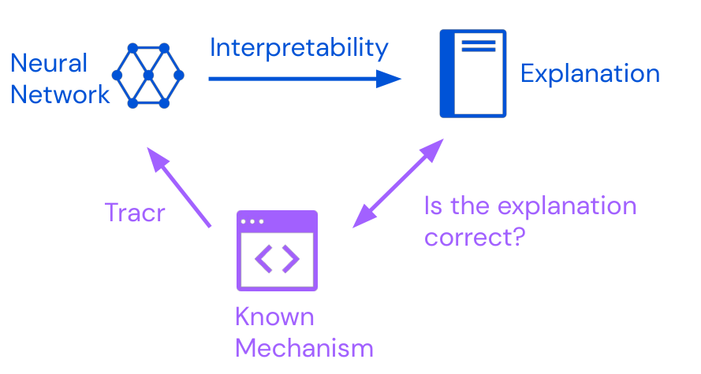
Figure 1: Interpretability tools produce explanations for a given neural network. Tracr creates models that implement a known mechanism. We can then compare this mechanism to explanations an interpretability tool produces.
图 1：可解释性工具为给定的神经网络生成解释。Tracr 创建实现已知机制的模型。随后，我们可以将这一机制与可解释性工具生成的解释进行比较。
Large language models (LLMs) are powerful but their inner workings are poorly understood (Danilevsky et al., 2020). The development of techniques for interpreting them is held back by a lack of ground-truth explanations (Yang et al., 2019). Our “compiler”, Tracr, converts human-readable programs written in RASP, a domain-specific language for transformer computations (Weiss et al., 2021), into standard decoder-only transformers.
大型语言模型（LLM）功能强大，但其内部工作机制尚未得到充分理解 (Danilevsky et al., 2020)。由于缺乏作为真实参照的解释，用于解释这些模型的技术的发展受到制约 (Yang et al., 2019)。我们的“编译器” Tracr 将用 RASP 编写的人类可读程序转换为标准的仅解码器 Transformer；RASP 是一种面向 Transformer 计算的领域专用语言 (Weiss et al., 2021)。
Tracr constructs models with known computational structure, which makes it easier to conduct interpretability experiments. As an example, we study neural networks’ ability to compress a large number of sparse features into fewer dimensions using superposition (Elhage et al., 2022a). Compressing Tracr models using gradient descent allows us to study superposition in transformers implementing multi-step algorithms.
Tracr 构建具有已知计算结构的模型，使可解释性实验更易于开展。例如，我们研究神经网络利用叠加将大量稀疏特征压缩到更少维度中的能力 (Elhage et al., 2022a)。通过使用梯度下降压缩 Tracr 模型，我们能够研究实现多步算法的 Transformer 中的叠加现象。
A second use of transformers that implement known computations is evaluating interpretability methods aiming to reveal facts about a model’s computation. Tracr could allow future work to directly test methods including, for example, classifier probes (Belinkov, 2022), gradient-based attribution (Nielsen et al., 2022), and causal tracing (Meng et al., 2022).
实现已知计算的 Transformer 的第二种用途，是评估旨在揭示模型计算相关事实的可解释性方法。Tracr 可使未来的研究直接检验多种方法，例如分类器探针 (Belinkov, 2022)、基于梯度的归因 (Nielsen et al., 2022) 和因果追踪 (Meng et al., 2022)。
Our main contributions are to: (1) Introduce Tracr, which “compiles” RASP programs into transformer models (Section 3); (2) Showcase models produced by Tracr (Section 4); (3) Provide a case-study where we examine superposition Tracr models compressed using gradient descent (Section 5). We confirm key observations by Elhage et al. (2022b) in a new setting: compressed models drop unnecessary features, and represent less important features in superposition.
我们的主要贡献包括：(1) 介绍 Tracr，它能够将 RASP 程序“编译”为 Transformer 模型（第 3 节）；(2) 展示 Tracr 生成的模型（第 4 节）；(3) 提供一个案例研究，考察使用梯度下降压缩的 Tracr 模型中的叠加现象（第 5 节）。我们在新的情境中验证了 Elhage et al. (2022b) 的关键观察结果：压缩后的模型会舍弃不必要的特征，并以叠加方式表示较不重要的特征。
In addition to aiding interpretability research, we think compiled models are a powerful didactic tool for developing a more concrete imagination for transformer mechanisms.
除了有助于可解释性研究之外，我们认为，编译所得模型也是一种强有力的教学工具，有助于形成对 Transformer 机制更为具体的直观认识。
We discuss the applications and limitations of Tracr in Section 7 and Appendix A, and we provide an open-source implementation of the compiler at https://github.com/google-deepmind/tracr.
我们在第 7 节和附录 A 中讨论 Tracr 的应用与局限，并在 https://github.com/google-deepmind/tracr 提供该编译器的开源实现。
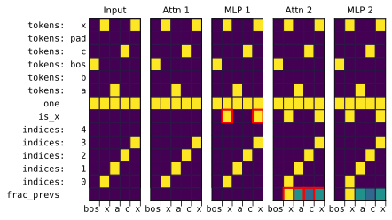
Figure 2: An example RASP program (left) that computes the fraction of previous “x” tokens at each position of the input. Tracr compiles this program to a transformer model. (right) A visualisation of a forward pass through the compiled model, showing the contents the residual stream, one panel per layer. The y-axis shows the residual stream dimensions, while the x-axis of each panel corresponds to the input sequence, “<bos>xacx” (x-axis). Changes to the residual are marked in red. Attn 1 is a no-op, MLP 1 computes the indicator variable is_x, Attn 2 implements the select-aggregate operation to compute frac_prevs, and MLP 2 is a no-op again. Section 4 discusses this and other examples in more detail. A detailed, step-by-step interpretation of the figure is provided in Appendix C.
图 2：一个 RASP 程序示例（左），用于计算输入中每个位置之前的词元中“x”所占的比例。Tracr 将该程序编译为一个 Transformer 模型。（右）编译所得模型的一次前向传播的可视化，展示残差流的内容，每个面板对应一层。y 轴表示残差流的维度，而每个面板的 x 轴对应输入序列“<bos>xacx”（x 轴）。残差的变化以红色标出。Attn 1 不执行任何操作，MLP 1 计算指示变量 is_x，Attn 2 实现选择-聚合操作以计算 frac_prevs，MLP 2 同样不执行任何操作。第 4 节更详细地讨论了这一示例及其他示例。附录 C 提供了对该图逐步展开的详细解读。
2 Background2 背景
This section provides an overview of key concepts our work builds on. In particular, we review the transformer model architecture and the RASP programming language.
本节概述了本研究所依托的关键概念。具体而言，我们回顾了 Transformer 模型架构和 RASP 编程语言。
2.1 Transformer Architecture2.1 Transformer 架构
A transformer model consists of alternating multi-headed attention (MHA) and multi-layer perceptron (MLP) layers with residual connections. Multi-headed attention (Vaswani et al., 2017) computes attention maps on sequences of length $N$. A single attention head $i$ first computes an attention pattern
Transformer 模型由交替排列的多头注意力（MHA）层和多层感知机（MLP）层组成，并带有残差连接。多头注意力 (Vaswani et al., 2017) 在长度为 $N$ 的序列上计算注意力图。单个注意力头 $i$ 首先计算如下注意力模式
for some input $x\in\mathbb{R}^{N\times d}$, where $W_{Q}^{i},W_{K}^{i}\in\mathbb{R}^{d\times d_{k}}$ are learnable parameters. Usually, we call the entries of $(xW_{K}^{i})$ keys, and the entries of $(xW_{Q}^{i})$ queries. Multi-headed attention combines $H$ attention heads heads by computing
其中，输入为某个 $x\in\mathbb{R}^{N\times d}$，$W_{Q}^{i},W_{K}^{i}\in\mathbb{R}^{d\times d_{k}}$ 为可学习参数。通常，我们将 $(xW_{K}^{i})$ 中的各项称为键，将 $(xW_{Q}^{i})$ 中的各项称为查询。多头注意力通过如下计算组合 $H$ 个注意力头
where $W_{V}^{i}\in\mathbb{R}^{d\times d_{v}}$ and $W_{O}\in\mathbb{R}^{Hd_{v}\times d}$ are another set of learnable parameters. We commonly call the entries of $(xW_{V}^{i})$ values.
其中，$W_{V}^{i}\in\mathbb{R}^{d\times d_{v}}$ 和 $W_{O}\in\mathbb{R}^{Hd_{v}\times d}$ 是另一组可学习参数。我们通常将 $(xW_{V}^{i})$ 中的各项称为值。
The MLP layers in transformer models compute $\mathrm{MLP}(x)=\sigma(xW_{1})W_{2}$ where $W_{1}\in\mathbb{R}^{d\times h}$, $W_{2}\in\mathbb{R}^{h\times d}$ are learnable weights, and $\sigma$ is a non-linear function; for simplicity, we use the Rectified Linear Unit (ReLU). In this paper, we focus on decoder-only transformers, which consists of alternating blocks of MHA and MLP.
Transformer 模型中的 MLP 层计算 $\mathrm{MLP}(x)=\sigma(xW_{1})W_{2}$，其中 $W_{1}\in\mathbb{R}^{d\times h}$、$W_{2}\in\mathbb{R}^{h\times d}$ 为可学习的权重，$\sigma$ 为非线性函数；为简单起见，我们使用修正线性单元（ReLU）。本文重点研究仅含解码器的 Transformer，其由 MHA 和 MLP 模块交替组成。
When designing Tracr, we adopt the transformer circuits perspective, introduced by Elhage et al. (2021). This view (1) focuses on the transformer being a residual stream architecture and (2) introduces an alternative parameterisation for attention operations. Taking this viewpoint, simplifies reasoning about the transformer architecture and will help us when assembling transformers manually.
在设计 Tracr 时，我们采用 Elhage et al. (2021) 提出的 Transformer 电路视角。这一视角 (1) 强调 Transformer 是一种残差流架构，(2) 为注意力运算引入了另一种参数化方式。采用这一视角可以简化对 Transformer 架构的推理，并有助于我们手动组装 Transformer。
The residual stream view.残差流视角。
Transformers have residual connections at each attention and MLP layer. Elhage et al. (2021) consider the residual connections a core feature of the architecture and describe the model in terms of a residual stream that each layer reads from and writes to in sequence. The residual stream acts as a type of memory that earlier layers can use to pass information to later layers.
Transformer 在每个注意力层和 MLP 层都具有残差连接。Elhage et al. (2021) 将残差连接视为该架构的核心特征，并以残差流来描述模型，各层依次从残差流中读取信息并向其中写入信息。残差流起到一种存储器的作用，较早的层可以利用它向较晚的层传递信息。
Parameterising attention as ${W_{QK}}$ and ${W_{OV}}$.将注意力参数化为 ${W_{QK}}$ 和 ${W_{OV}}$。
Following Elhage et al. (2021), we parameterise an attention head by two (low-rank) matrices ${W_{QK}}^{i}=W_{Q}^{i}(W_{K}^{i})^{T}/\sqrt{d_{k}}\in\mathbb{R}^{d\times d}$ and ${W_{OV}}^{i}=W_{V}^{i}W_{O}^{i}\in\mathbb{R}^{d\times d}$ where we split $W_{O}$ into different heads, such that $W_{O}=[W_{O}^{1},\dots W_{O}^{H}]$, where each $W_{O}^{i}\in\mathbb{R}^{d_{v}\times d}$. We can then write MHA as
遵循 Elhage et al. (2021)，我们用两个（低秩）矩阵 ${W_{QK}}^{i}=W_{Q}^{i}(W_{K}^{i})^{T}/\sqrt{d_{k}}\in\mathbb{R}^{d\times d}$ 和 ${W_{OV}}^{i}=W_{V}^{i}W_{O}^{i}\in\mathbb{R}^{d\times d}$ 对一个注意力头进行参数化，其中我们将 $W_{O}$ 按不同的头拆分，使得 $W_{O}=[W_{O}^{1},\dots W_{O}^{H}]$，其中每个 $W_{O}^{i}\in\mathbb{R}^{d_{v}\times d}$。于是，我们可以将 MHA 写为
Importantly, we can think of MHA as summing over the outputs of $H$ independent attention heads, each parameterised by low-rank matrices ${W_{QK}}$ and ${W_{OV}}$. ${W_{QK}}$ acts as a bilinear operator reading from the residual stream, and ${W_{OV}}$ is a linear operator both reading from and writing to the residual stream. The softmax is the only nonlinearity in an attention head.
重要的是，我们可以将 MHA 视为对 $H$ 个独立注意力头的输出求和，其中每个头均由低秩矩阵 ${W_{QK}}$ 和 ${W_{OV}}$ 参数化。${W_{QK}}$ 是从残差流中读取信息的双线性算子，而 ${W_{OV}}$ 是既从残差流中读取信息又向其中写入信息的线性算子。softmax 是注意力头中唯一的非线性运算。
2.2 RASP2.2 RASP
The “Restricted Access Sequence Processing Language” (RASP) is a human-readable computational model for transformer models introduced by Weiss et al. (2021). RASP is a sequence processing language with two types of variables, sequence operations (s-ops) and selectors, and two types of instructions, elementwise and select-aggregate transformations.
“受限访问序列处理语言”（RASP）是 Weiss et al. (2021) 提出的一种人类可读的 Transformer 模型计算模型。RASP 是一种序列处理语言，包含两类变量，即序列操作（s-op）和选择器，以及两类指令，即逐元素变换和选择-聚合变换。
Sequence operations.序列操作。
A sequence operation (s-op) represents sequences of values during evaluation. tokens and indices are built-in primitive s-ops that return a sequence of input tokens or their indices, respectively. For example: tokens("hello") $=[\mathrm{h},\mathrm{e},\mathrm{l},\mathrm{l},\mathrm{o}]$, and indices("hello") $=[0,1,2,3,4]$. S-ops roughly correspond to the state of the residual stream in transformers.
序列操作（s-op）在求值过程中表示值序列。tokens 和 indices 是内置的基本 s-op，分别返回输入词元的序列及其索引序列。例如：tokens("hello") $=[\mathrm{h},\mathrm{e},\mathrm{l},\mathrm{l},\mathrm{o}]$，以及 indices("hello") $=[0,1,2,3,4]$。s-op 大致对应于 Transformer 中残差流的状态。
Elementwise operations.逐元素操作。
RASP allows arbitrary elementwise operations on s-ops. For example, we can compute (3*indices)("hello") $=[0,3,6,9,12]$. Elementwise operations roughly correspond to MLP layers in transformers.
RASP 允许对 s-op 执行任意逐元素操作。例如，我们可以计算 (3*indices)("hello") $=[0,3,6,9,12]$。逐元素操作大致对应于 Transformer 中的 MLP 层。
Select-aggregate operations.选择-聚合操作。
To move information between token positions, RASP provides select-aggregate operations which roughly correspond to attention in transformers. A selector has a graph dependency on two s-ops and evaluates on inputs of length $N$ to a binary matrix of size $N\times N$. To create a selector, the select operation takes two s-ops and a boolean predicate $p(x,y)$. For example:
为在词元位置之间传递信息，RASP 提供了选择-聚合操作，其大致对应于 Transformer 中的注意力。选择器在计算图中依赖于两个 s-op，并在长度为 $N$ 的输入上求值得到一个大小为 $N\times N$ 的二值矩阵。为创建选择器，select 操作接收两个 s-op 和一个布尔谓词 $p(x,y)$。例如：
Here, $p(x,y)=x<y$, where $x$ comes from indices, and $y$ comes from the constant s-op $[1,0,2]$.
这里，$p(x,y)=x<y$，其中 $x$ 来自 indices，$y$ 来自常量 s-op $[1,0,2]$。
The aggregate operation takes as input a selector and an s-op, and produces an s-op that averages the value of the s-op weighted by the selection matrix. For example:
aggregate 操作接收一个选择器和一个 s-op 作为输入，并生成一个 s-op，其根据选择矩阵对输入 s-op 的值进行加权平均。例如：
A selector roughly corresponds to an attention pattern in a transformer. Together a select-aggregate operation roughly corresponds to an attention head in transformers.
选择器大致对应于 Transformer 中的注意力模式。选择与聚合操作合在一起，大致对应于 Transformer 中的一个注意力头。
2.3 Mechanistic Interpretability and Superposition2.3 机制可解释性与叠加
Mechanistic interpretability (Cammarata et al., 2020; Olah, 2022) aims to produce mechanistic explanations of the inner workings of ML programs. This includes attempts to reverse engineer how neural networks implement specific behaviours (Cammarata et al., 2020).
机制可解释性 (Cammarata et al., 2020; Olah, 2022) 旨在对机器学习程序的内部工作原理给出机制层面的解释。这包括尝试通过逆向工程揭示神经网络如何实现特定行为 (Cammarata et al., 2020)。
In Section 5, we study superposition: the ability of a neural network to approximately represent many more features than the number of dimensions of the embedding space (Elhage et al., 2022a). Despite preliminary evidence that superposition occurs in neural networks, it remains poorly understood, in part because it has only been studied in small (2-layers or less) networks that implement very simple algorithms (Elhage et al., 2022b; Scherlis et al., 2022). Understanding superposition in larger models could represent a major step forward for mechanistic interpretability (Olah, 2022).
在第 5 节中，我们研究叠加：即神经网络近似表示远多于嵌入空间维数的特征的能力 (Elhage et al., 2022a)。尽管已有初步证据表明神经网络中存在叠加现象，但人们对其仍缺乏充分理解，部分原因在于，现有研究仅考察了实现非常简单算法的小型网络（2 层或更少）中的叠加现象 (Elhage et al., 2022b; Scherlis et al., 2022)。理解较大模型中的叠加现象，可能意味着机制可解释性取得重大进展 (Olah, 2022)。
3 Tracr: A Transformer Compiler for RASP3 Tracr：面向 RASP 的 Transformer 编译器
In this section, we provide an overview of how Tracr translate RASP programs to transformer weights. For more details on the implementation, we refer to Appendix D and our open-source implementation at https://github.com/google-deepmind/tracr including the accompanying documentation.
本节概述 Tracr 如何将 RASP 程序转换为 Transformer 权重。有关实现的更多细节，请参阅附录 D，以及我们在 https://github.com/google-deepmind/tracr 上提供的开源实现及其配套文档。
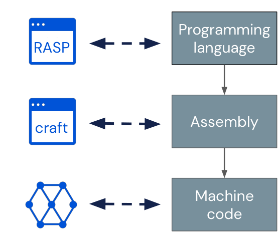
Figure 3: Tracr translates RASP to Craft and then to model weights, analogous to how programming languages are first translated to assembly then to machine code.
图 3：Tracr 将 RASP 转换为 Craft，再转换为模型权重，这类似于先将编程语言转换为汇编语言，再转换为机器码的过程。
Tracr comes with an implementation of RASP embedded in Python. A RASP program is an expression graph which is incrementally constructed from atomic RASP operations. We make a few technical modifications to allow translating RASP to model weights: we disallow boolean combinations of selectors, enforce annotated categorical or numerical embeddings for the residual stream, and enforce the use of a beginning-of-sequence token. We discuss the motivations for each of these changes in Appendix B, where we also explain how any RASP program can be refactored to be compatible with these restrictions. In practice, we can implement programs to solve all tasks described by Weiss et al. (2021).
Tracr 提供了嵌入 Python 的 RASP 实现。RASP 程序是由原子 RASP 操作逐步构建而成的表达式图。为使 RASP 能够转换为模型权重，我们做了几项技术性修改：禁止选择器的布尔组合，要求为残差流中的嵌入标注类别型或数值型，并强制使用序列起始词元。我们在附录 B 中讨论了这些修改各自的动机，并解释了如何重构任意 RASP 程序，使其满足这些限制。在实践中，我们能够实现相应的程序，以解决 Weiss et al. (2021) 中描述的所有任务。
If RASP is the high-level language we compile, Craft is our “assembly language”, offering slightly more abstraction than pure weight matrices (cf. Figure 3). Craft provides a transformer implementation using vector spaces with labelled basis dimensions and operations on them. This lets us define projections or other linear operations in terms of basis direction labels, which simplifies constructing model components that act on different vector spaces. As a bonus, models represented in Craft are independent of specific transformer implementations. Models compiled by Tracr can be translated into weights of any standard decoder-only transformer model (without layer norm).
如果说 RASP 是我们编译的高级语言，那么 Craft 就是我们的“汇编语言”，其抽象程度略高于纯粹的权重矩阵（参见图 3）。Craft 利用基维度带有标签的向量空间及其上的操作，提供了一种 Transformer 实现。这使我们能够根据基方向的标签来定义投影或其他线性操作，从而简化作用于不同向量空间的模型组件的构建。此外，以 Craft 表示的模型独立于具体的 Transformer 实现。Tracr 编译的模型可以转换为任意标准的仅解码器 Transformer 模型（不含层归一化）的权重。
Tracr translates RASP programs to transformer weights in six steps:
Tracr 通过六个步骤将 RASP 程序转换为 Transformer 权重：
1. Construct a computational graph (Figure 4(a)).
1. 构建计算图（图 4(a)）。
2. Infer s-op input and output values (Figure 4(a)).
2. 推断 s-op 的输入值和输出值（图 4(a)）。
3. Independently translate s-ops into model blocks (Figure 4(b)).
3. 将各个 s-op 独立转换为模型块（图 4(b)）。
4. Assign components to layers (Figure 4(c)).
4. 将组件分配到各层（图 4(c)）。
5. Construct the model (Figure 4(c)).
5. 构建模型（图 4(c)）。
6. Assemble weight matrices.
6. 组装权重矩阵。
Let us go through these step by step. Figure 4 gives a schematic overview using an example program.
下面逐步介绍这些步骤。图 4 通过一个示例程序给出了示意性概览。
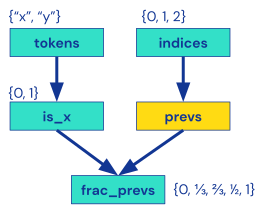
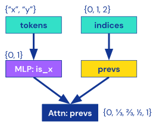
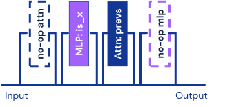
(a) Steps 1 & 2: Graph with inferred s-op value sets.
(a) 步骤 1 和 2：标有推断出的 s-op 取值集合的图。
1. Construct a computational graph (Figure 4(a)).1. 构建计算图（图 4(a)）。
First, we trace the whole program to create a directed graph representing the computation. The graph has source nodes representing tokens and indices and a sink node for the output s-op. Each operation in the RASP program becomes a node in the computational graph.
首先，我们追踪整个程序，创建一个表示计算过程的有向图。图中包含表示词元和索引的源节点，以及表示输出 s-op 的汇节点。RASP 程序中的每个操作都成为计算图中的一个节点。
2. Infer s-op values (Figure 4(a)).2. 推断 s-op 的取值（图 4(a)）。
For each s-op, we need to decide how to embed it in the residual stream. To use categorical encodings, we need to know which values an s-op can take. All nodes have a finite set of output values because computations are deterministic, and we have a finite input vocabulary and context size. Therefore, in the second step, we traverse the graph and annotate each node with its possible outputs. This annotation uses simple heuristics that ensure we find a superset of the values an s-op will take, though, sometimes, an output set can contain values that the s-op never takes in practice.
对于每个 s-op，我们需要确定如何将其嵌入残差流。要使用类别编码，我们需要知道 s-op 可能取哪些值。由于计算是确定性的，且输入词表和上下文大小均有限，因此所有节点的输出值集合都是有限的。因此，在第二步中，我们遍历该图，并为每个节点标注其可能的输出。这一标注过程采用简单的启发式方法，确保找到 s-op 实际取值集合的一个超集；不过，有时输出集合也会包含 s-op 在实际运行中从未取过的值。
3. Independently translate s-ops (Figure 4(b)).3. 独立转换各个 s-op（图 4(b)）。
Next, we consider each node in the computational graph independently and translate it into a model block. Elementwise operations become MLP blocks, and select-aggregate operations become attention blocks. We use a library of manually engineered MLP and attention blocks to approximate arbitrary functions for numerical and categorical inputs and outputs. MLPs with categorical inputs and outputs function as lookup tables. MLPs with numerical inputs and outputs use piecewise linear approximations. For attention layers, we translate a selector into the ${W_{QK}}$ operator and the corresponding aggregate operation into the ${W_{OV}}$ operator. We only support attention with categorical inputs. We also do a few basic simplifications of RASP programs at this stage. For example, we combine consecutive elementwise operations into a single s-op. For more details on the MLP and attention blocks, see Appendix D.
接下来，我们独立考虑计算图中的每个节点，并将其转换为一个模型块。逐元素操作转换为 MLP 块，选择—聚合操作转换为注意力块。我们使用一个由人工设计的 MLP 块和注意力块组成的库，来近似输入和输出为数值型或类别型的任意函数。输入和输出均为类别型的 MLP 起查找表的作用。输入和输出均为数值型的 MLP 使用分段线性近似。对于注意力层，我们将选择器转换为 ${W_{QK}}$ 算子，并将相应的聚合操作转换为 ${W_{OV}}$ 算子。我们仅支持输入为类别型的注意力。在这一阶段，我们还会对 RASP 程序进行一些基本简化。例如，我们将连续的逐元素操作合并为单个 s-op。有关 MLP 块和注意力块的更多细节，请参阅附录 D。
4. Assign components to layers (Figure 4(c)).4. 将组件分配到各层（图 4(c)）。
To construct a transformer model, we need to allocate all model blocks in the computational graph to layers. Ideally, we want to find the smallest model to perform the desired computation. We can generally formulate this as a combinatorial optimization problem with several constraints: the transformer architecture has alternating attention and MLP layers, and all computations that depend on each other need to be in the correct order. For scope reasons, we solve this problem heuristically. First, we compute the longest path from the input to a given node. This path length is an upper bound for the layer number to which we can allocate the node. Then we apply additional heuristics to combine layers with blocks that we can compute in parallel. This approach returns a correct but sometimes suboptimal layer allocation.
为构建 Transformer 模型，我们需要将计算图中的所有模型模块分配到各层。理想情况下，我们希望找到能够执行所需计算的最小模型。一般而言，我们可以将其表述为一个具有若干约束的组合优化问题：Transformer 架构中的注意力层与 MLP 层交替排列，且所有相互依赖的计算都必须按正确的顺序执行。受本文研究范围所限，我们采用启发式方法求解该问题。首先，我们计算从输入到给定节点的最长路径。该路径长度是该节点可被分配到的层编号的上界。随后，我们应用额外的启发式方法，将可并行计算的模块合并到同一层中。该方法得到的层分配方案是正确的，但有时并非最优。
5. Construct the model (Figure 4(c)).5. 构建模型（图 4(c)）。
We construct the residual stream space as the direct sum of all model components’ input and output spaces. In other words, we embed each s-op in its own orthogonal subspace, which is reserved for its sole use throughout the entire network. Now, we can traverse the computational graph in the order determined by the layer allocation and stack the components to obtain a full transformer represented in Craft.
我们将残差流空间构建为所有模型组件的输入空间与输出空间的直和。换言之，我们将每个 s-op 嵌入其各自的正交子空间中，该子空间在整个网络中始终仅供该 s-op 使用。现在，我们可以按照层分配所确定的顺序遍历计算图，并堆叠各组件，从而得到一个以 Craft 表示的完整 Transformer。
6. Assemble weight matrices.6. 组装权重矩阵。
Finally, we translate the Craft representation of the model into concrete model weights. First, we combine parallel MLP layers into a single layer and parallel attention heads into a single layer. In attention layers, we then factor the ${W_{QK}}$ and ${W_{OV}}$ matrices into separate $W_{q}$, $W_{k}$, $W_{o}$, $W_{v}$ weight matrices. Finally, we adjust the shapes of all weights and connect them to our transformer architecture. We can then infer the model configuration (depth, layer width, residual stream size, etc.) to fit the elements we have created.
最后，我们将模型的 Craft 表示转换为具体的模型权重。首先，我们将并行的 MLP 层合并为单个层，并将并行的注意力头合并为单个层。随后，在注意力层中，我们将 ${W_{QK}}$ 和 ${W_{OV}}$ 矩阵分解为独立的 $W_{q}$、$W_{k}$、$W_{o}$、$W_{v}$ 权重矩阵。最后，我们调整所有权重的形状，并将其连接到我们的 Transformer 架构中。然后，我们便可推断出与所创建组件相匹配的模型配置（深度、层宽度、残差流大小等）。
We use a standard decoder-only transformer implementation in Haiku (Hennigan et al., 2020), notably removing layer norms. Extending Tracr to support any other transformer implementation is straightforward by reimplementing only step 6.
我们采用 Haiku (Hennigan et al., 2020) 中的标准仅解码器 Transformer 实现，其中一个值得注意的改动是移除了层归一化。只需重新实现步骤 6，即可方便地扩展 Tracr，使其支持任何其他 Transformer 实现。
We are now ready to compile models with Tracr and walk through a few example programs.
现在，我们已准备好使用 Tracr 编译模型，并逐一分析几个示例程序。
4 Exploring Compiled Transformers4 探索编译得到的 Transformer
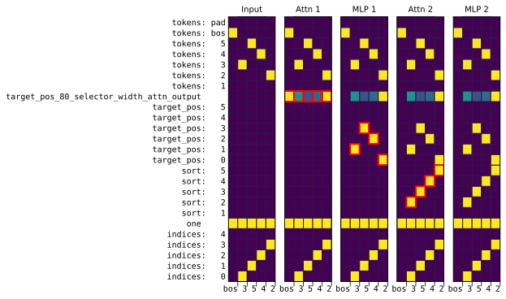
Figure 5: RASP program that sorts a sequence of numbers without duplicates. Attn 1 and MLP 1 implement the selector_width primitive (cf. Appendix D) which the program uses to compute the target position for each token. Attn 2 moves the tokens to the desired position, and MLP 2 is a no-op.
图 5：对不含重复值的数字序列进行排序的 RASP 程序。Attn 1 和 MLP 1 实现了 selector_width 原语（参见附录 D），程序使用该原语计算每个词元的目标位置。Attn 2 将词元移动到所需位置，而 MLP 2 不执行任何操作。
In this section, we walk through two example programs to illustrate how the compiled models work. While these models are not necessarily realistic, they represent configurations of weights that could, in principle, be learned. Examining these models can therefore be a powerful didactic tool for understanding how transformers perform complex computation, which we hope will expand our collective imagination for their inner workings.
本节将逐一分析两个示例程序，以说明编译得到的模型如何工作。尽管这些模型未必符合实际情况，但它们所代表的权重配置原则上可以通过学习获得。因此，考察这些模型可以成为一种有力的教学工具，帮助理解 Transformer 如何执行复杂计算；我们希望这能拓展大家对其内部工作机制的想象。
We were able to compile RASP programs for all the tasks described in Weiss et al. (2021), though we had to modify a few programs to only use features supported by Tracr. Appendix G contains more examples.
我们成功编译了用于 Weiss et al. (2021) 中所述所有任务的 RASP 程序，不过我们必须修改其中几个程序，使其仅使用 Tracr 支持的功能。附录 G 包含更多示例。
4.1 Example 1: Counting Tokens4.1 示例 1：词元计数
Figure 2 shows our primary running example, the frac_prevs program, that computes the fraction of previous “x" tokens.
图 2 展示了本文贯穿使用的主要示例，即计算前序词元中“x”词元所占比例的 frac_prevs 程序。
The compiled frac_prevs model has a 14-dimensional residual stream, but it uses 12 out of these for the input embeddings. The remaining two dimensions contain the main numerical variables used in the computation: is_x and frac_prevs (the output variable). The input embeddings have a few special dimensions. In particular, tokens:bos is the beginning of sequence token which we need to implement arbitrary attention patterns, and one is an input dimension that is always $1$, used as a constant, e.g., to add a bias in MLP layers.
编译得到的 frac_prevs 模型具有 14 维残差流，但其中 12 维用于输入嵌入。剩余两维包含计算中使用的主要数值变量：is_x 和 frac_prevs（输出变量）。输入嵌入包含几个特殊维度。具体而言，tokens:bos 是序列起始词元，我们需要用它来实现任意注意力模式；one 则是一个始终为 $1$ 的输入维度，用作常数，例如用于在 MLP 层中添加偏置。
The compiled model uses one MLP layer and one attention head. However, because our model architecture always starts with an attention layer, the compiled model has four layers, with the first and last layers being no-ops. The first MLP layer computes the indicator variable is_x based on the input tokens. The following attention layer computes a causal attention pattern and uses it to compute the faction of previous “x” tokens.
编译得到的模型使用一个 MLP 层和一个注意力头。然而，由于我们的模型架构始终以注意力层开始，因此编译得到的模型共有四层，其中第一层和最后一层不执行任何操作。第一个 MLP 层根据输入词元计算指示变量 is_x。随后的注意力层计算因果注意力模式，并利用该模式计算前序词元中“x”词元所占的比例。
4.2 Example 2: Sorting4.2 示例 2：排序
As a second example, let us consider sorting a sequence of numbers. Figure 5 shows a sort_unique program that sorts a sequence of unique tokens.
作为第二个示例，我们考虑对数字序列进行排序。图 5 展示了一个对互不相同的词元组成的序列进行排序的 sort_unique 程序。
The program computes uses a selector to select smaller tokens for each input token, and then uses the selector_width primitive in RASP to compute the target position for each token. selector_width counts the number of elements in each row of a selector that are $1$, in this case the number of elements that are smaller than a given input token. selector_width can be implemented in terms of other RASP operations (Weiss et al., 2021). However, in Tracr we treat it as a primitive that compiles directly to an attention and MLP layer (here Attn 1 and MLP 1). See Appendix D for more details. The model then uses a second attention layer to move each token to its target position.
该程序使用一个选择器，为每个输入词元选择比其更小的词元，然后使用 RASP 中的 selector_width 原语计算每个词元的目标位置。selector_width 统计选择器每一行中值为 $1$ 的元素数量，在本例中即小于给定输入词元的元素数量。selector_width 可以通过其他 RASP 操作来实现 (Weiss et al., 2021)。然而，在 Tracr 中，我们将其视为一个原语，直接编译为一个注意力层和一个 MLP 层（此处为 Attn 1 和 MLP 1）。更多细节见附录 D。随后，模型使用第二个注意力层将每个词元移动到其目标位置。
Weiss et al. (2021) propose a sort program that can handle duplicates (cf. their Figure 13). However, that implementation uses a composite selector
Weiss et al. (2021) 提出了一个能够处理重复元素的排序程序（参见其图 13）。然而，该实现使用了一个复合选择器
to treat duplicates, which is not currently supported by Tracr. In Appendix G, we provide an alternative implementation of sort that handles duplicates by adding a small multiple of indices to the keys and then applying sort_unique.
来处理重复元素，而 Tracr 目前尚不支持这种选择器。在附录 G 中，我们提供了另一种排序实现，通过在键上加上索引的一个小倍数，然后应用 sort_unique 来处理重复元素。
4.3 More Examples4.3 更多示例
Tracr can compile a wide range of RASP programs. In Appendix G, we discuss several additional examples, leading up to a program to check balanced parentheses (Dyck-n). Our open-source Tracr implementation (https://github.com/google-deepmind/tracr) contains a library of even more example programs to compile.
Tracr 可以编译多种 RASP 程序。在附录 G 中，我们讨论了若干其他示例，并逐步介绍了一个用于检查括号是否平衡的程序（Dyck-n）。我们的开源 Tracr 实现（https://github.com/google-deepmind/tracr）包含一个程序库，其中提供了更多可供编译的示例程序。
5 Compressing Compiled Transformers5 压缩编译得到的 Transformer
Superposition is an important phenomenon in large language models (see Section 2.3, Elhage et al. (2022b), and Scherlis et al. (2022)). But to the best of our knowledge, it has not yet been studied in detail for models with more than two layers or in transformer models executing multi-step algorithms. Tracr lets us examine these models, and we can force different levels of superposition by applying a gradient-descent-based compression algorithm.
叠加是大型语言模型中的一个重要现象（参见第 2.3 节、Elhage et al. (2022b) 和 Scherlis et al. (2022)）。但据我们所知，对于层数超过两层的模型或执行多步算法的 Transformer 模型，尚未有研究对这一现象进行详细考察。Tracr 使我们能够考察这些模型，并且可以通过应用基于梯度下降的压缩算法，强制模型呈现不同程度的叠加。
In addition to helping us study superposition, compressed models could be more efficient and realistic. Tracr models can be sparse and inefficient because they reserve an orthogonal subspace of the residual stream for each s-op.
除了帮助我们研究叠加现象之外，压缩后的模型还可能更高效、更贴近实际。Tracr 模型可能较为稀疏且效率较低，因为它们为每个 s-op 在残差流中预留了一个正交子空间。
Here, we present two case studies of compressing compiled models using the frac_prevs and the sort_unique programs from Section 4. These sketch how Tracr can be practically useful in advancing interpretability research, while also giving a glimpse of how Tracr could be extended to produce more realistic models.
这里，我们给出两个压缩编译模型的案例研究，分别使用第 4 节中的 frac_prevs 和 sort_unique 程序。这些案例初步展示了 Tracr 在推进可解释性研究方面的实际用途，同时也让我们得以初步了解如何扩展 Tracr，以生成更贴近实际的模型。
5.1 Gradient Descent Based Compression5.1 基于梯度下降的压缩
We use a single linear projection $W\in\mathbb{R}^{D\times d}$ to compress the disentangled residual stream with size $D$ to a smaller space with dimension $d<D$. We modify the model to apply $W^{T}$ whenever it reads from and $W$ whenever it writes to the residual stream (see Figure 6). We freeze all other weights and train only $W$ using stochastic gradient descent (SGD). Since vanilla Tracr models are sparse and have orthogonal features, this process can be viewed as learning the projection from a “hypothetical disentangled model" to the “observed model" described by Elhage et al. (2022b).
我们使用单个线性投影 $W\in\mathbb{R}^{D\times d}$，将大小为 $D$ 的解耦残差流压缩到维度为 $d<D$ 的较小空间。我们对模型进行修改，使其每次从残差流读取时应用 $W^{T}$，每次向残差流写入时应用 $W$（见图 6）。我们冻结所有其他权重，仅使用随机梯度下降（SGD）训练 $W$。由于原始 Tracr 模型是稀疏的，且具有正交特征，因此，这一过程可以视为学习 Elhage et al. (2022b) 所描述的从“假设的解耦模型”到“观测模型”的投影。
We want the compressed model to minimise loss under the constraint that it implements the same computation as the original model. We train $W$ to minimise $\mathbb{E}_{x}[\mathcal{L}_{\mathrm{out}}(W,x)+\mathcal{L}_{\mathrm{layer}}(W,x)]$, where
我们希望压缩后的模型在实现与原始模型相同计算的约束下最小化损失。我们训练 $W$ 以最小化 $\mathbb{E}_{x}[\mathcal{L}_{\mathrm{out}}(W,x)+\mathcal{L}_{\mathrm{layer}}(W,x)]$，其中
Here, $f(x)$ is the output of the compiled model for input $x$, $\hat{f}_{W}(x)$ is the output of the compressed model, and $h_{i}(x)$ and $\hat{h}_{W,i}(x)$ are the output vectors at layer $i$ of the respective models.
这里，$f(x)$ 是编译得到的模型对于输入 $x$ 的输出，$\hat{f}_{W}(x)$ 是压缩后模型的输出，$h_{i}(x)$ 和 $\hat{h}_{W,i}(x)$ 分别是这两个模型在第 $i$ 层的输出向量。
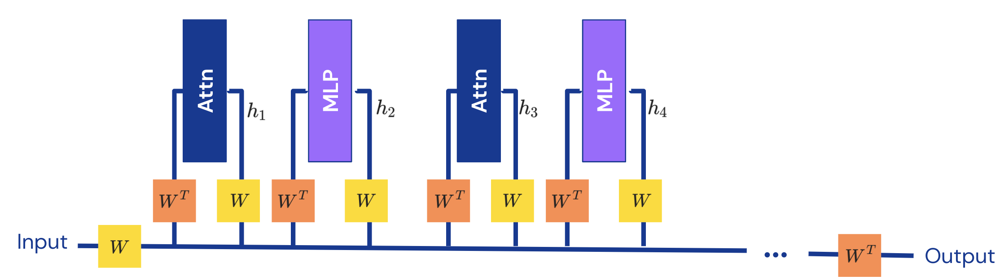
Figure 6: Training setup for compressing a compiled transformer model. At each layer, we use the same matrix $W\in\mathbb{R}^{D\times d}$ to embed the disentangled $D$-dimensional residual stream to $d\leq D$ dimensions. We freeze the layer weights and only train $W$ to compress the model.
图 6：用于压缩编译得到的 Transformer 模型的训练设置。在每一层，我们使用相同的矩阵 $W\in\mathbb{R}^{D\times d}$，将解耦的 $D$ 维残差流嵌入到 $d\leq D$ 维空间。我们冻结各层的权重，仅训练 $W$ 来压缩模型。
For categorical outputs, $\mathcal{L}_{\mathrm{out}}$ is the softmax cross-entropy loss, whereas, for numerical outputs, it is the mean-squared error. $\mathcal{L}_{\mathrm{layer}}$ is a regularization term that incentives the compressed model to match the per-layer outputs of the original model. To minimise this loss, the compressed model will have to approximate the computation of the original model but with a smaller residual stream. We give both loss terms equal weight, but we found other weighting factors give similar results in practice.
对于类别输出，$\mathcal{L}_{\mathrm{out}}$ 为 softmax 交叉熵损失；对于数值输出，它则为均方误差。$\mathcal{L}_{\mathrm{layer}}$ 是一个正则化项，用于促使压缩后的模型匹配原始模型各层的输出。为了最小化这一损失，压缩后的模型必须使用更小的残差流来近似原始模型的计算。我们为这两个损失项赋予相同的权重，但发现其他权重系数在实践中也能得到相似的结果。
We could set up this compression in other ways. For example, we could use a different projection at each layer, use different matrices for embedding and unembedding, or modify weights other than $W$ when compressing the model. These design choices come with a tradeoff between making the model more expressible and potentially more realistic and enforcing the ground truth computation. For simplicity, we use a shared $W$ for embedding/unembedding at every layer, and we already observe a rich structure in models compressed with this procedure.
我们也可以采用其他方式设置这一压缩过程。例如，可以在每一层使用不同的投影，为嵌入和反嵌入使用不同的矩阵，或者在压缩模型时修改 $W$ 以外的权重。这些设计选择需要在增强模型的表达能力、使其可能更贴近实际与强制模型遵循真实计算之间进行权衡。为简单起见，我们在每一层的嵌入和反嵌入过程中使用同一个共享的 $W$，而且已经在通过这一过程压缩的模型中观察到了丰富的结构。
Appendix E contains more details on the training setup, hyperparameters, and resources used.
附录 E 提供了有关训练设置、超参数和所用资源的更多细节。
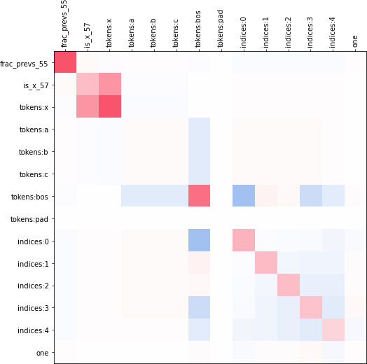
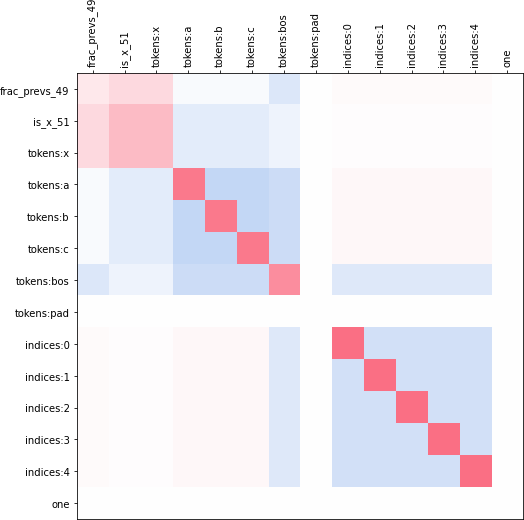
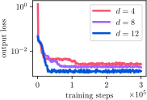
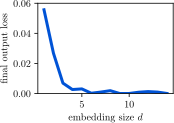
(a) Training loss
(a) 训练损失
5.2 What Does the Compression Learn?5.2 压缩学到了什么？
As our first case study, Figure 7 shows the example model from Figure 2, that computes the fraction of token “x”. By learning an embedding matrix $W$, we can reduce the residual dimension from $D=14$ to $d=6$ without hurting performance (cf Figure 7(b)). Once we reduce $d$ further, the model’s performance starts to suffer.
作为第一个案例研究，图 7 展示了图 2 中用于计算词元“x”所占比例的示例模型。通过学习嵌入矩阵 $W$，我们可以将残差维度从 $D=14$ 降至 $d=6$，而不损害性能（参见图 7(b)）。当进一步减小 $d$ 时，模型的性能开始下降。
To understand the compression better, we can study how $W$ embeds the original $D$ features in $d<D$ dimensions. We can only do this because we started with a compiled model with known features. Figure 7 shows $W^{T}W$ for compressing the model to $d=8$. We can compare this to using principle component analysis (PCA) to compress the model. To interpret the results, we need to use our knowledge of the algorithm the model implements. The input tokens:x and the variables is_x and frac_prevs are crucial for computing the fraction of tokens that is “x”, and we find that these variables mostly get separate dimensions in the compressed residual stream. The other input tokens stored in tokens:a, tokens:b, tokens:c are not necessary for solving the task, and so they are discarded in the compressed model. Other variables, such as the indices embeddings, are stored in non-orthogonal dimensions in the compressed space. This is consistent with existing findings on superposition as the indices embeddings are sparse and do not occur together (Elhage et al., 2022b).
为了更好地理解压缩，我们可以研究 $W$ 如何将原始的 $D$ 个特征嵌入 $d<D$ 维空间。之所以能够进行这一研究，是因为我们以特征已知的编译模型为起点。图 7 展示了将模型压缩至 $d=8$ 时的 $W^{T}W$。我们可以将其与使用主成分分析（PCA）压缩模型的结果进行比较。为了解释这些结果，我们需要利用对模型所实现算法的了解。输入 tokens:x 以及变量 is_x 和 frac_prevs 对于计算词元“x”所占比例至关重要，我们发现，这些变量在压缩后的残差流中大多占据各自独立的维度。存储在 tokens:a、tokens:b、tokens:c 中的其他输入词元并非完成任务所必需，因此在压缩后的模型中被舍弃。其他变量（如 indices 嵌入）则存储在压缩空间中的非正交维度上。这与已有的叠加现象研究结果一致，因为 indices 嵌入是稀疏的，且不会同时出现 (Elhage et al., 2022b)。
However, our results go beyond previous work on superposition. Tracr models often have multiple variables that depend on each other and encode shared information. For example, in frac_prevs, the is_x variable is an indicator that essentially contains the same information as the input dimension tokens:x. In Figure 7, we see that the embeddings of is_x and tokens:x share part of the embedding space. Intuitively, this occurs because the variables encode similar information.
然而，我们的结果超越了以往关于叠加现象的研究。Tracr 模型通常具有多个相互依赖且编码了共享信息的变量。例如，在 frac_prevs 中，变量 is_x 是一个指示变量，其包含的信息与输入维度 tokens:x 所包含的信息基本相同。在图 7 中，我们看到 is_x 和 tokens:x 的嵌入共享了部分嵌入空间。直观而言，出现这种现象是因为这些变量编码了相似的信息。
Future experiments could aim to further clarify the effect of shared information between variables on superposition. Tracr provides, for the first time, a setting to systematically study superposition in transformer models that implement nontrivial algorithms.
未来的实验可以致力于进一步阐明变量之间的共享信息对叠加现象的影响。Tracr 首次提供了一个研究环境，使我们能够在实现非平凡算法的 Transformer 模型中系统地研究叠加现象。
5.3 Do the Compressed Models Still Implement the Same Computation?5.3 压缩后的模型是否仍执行相同的计算？
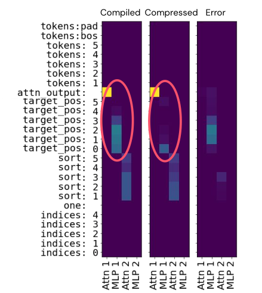
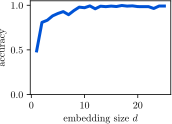
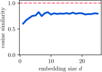
Figure 8: We compress sort_unique (Figure 5). The plots on the right show that the compressed model achieves nearly perfect accuracy, but the layer outputs of the compressed model are different from the original compiled model. The left plot shows the average layer outputs of the compiled model, the compressed model, and the squared difference. The compressed model seems to learn to use a different (numerical) encoding for the target_pos variable, which causes the discrepancy.
图 8：我们对 sort_unique（图 5）进行压缩。右侧各图表明，压缩后的模型达到了近乎完美的准确率，但其各层的输出与原始编译模型不同。左图展示了编译模型和压缩后模型的平均层输出，以及二者差值的平方。压缩后的模型似乎学会了对 target_pos 变量使用另一种（数值）编码，从而导致了这一差异。
Even if the compressed models successfully achieve a low loss, we need to check if they implement the same computation as the compiled models, or else we would no longer know the ground truth mechanisms the models implement. To this end, we evaluate the average cosine similarity between the output at each layer of the two models. Values far from $1$ suggest the compressed model is structured differently from the base model.
即使压缩后的模型成功达到了较低的损失，我们仍需要检查它们是否执行了与编译模型相同的计算，否则我们将无法再确知模型所实现机制的真实情况。为此，我们评估两个模型在各层输出之间的平均余弦相似度。该值远离 $1$ 表明，压缩后模型的结构与基础模型不同。
We find that for some models the cosine similarity stays substantially below $1$ even as the compressed model gets close to $100\%$ in accuracy. For example, Figure 8 shows results from compressing the sort_unique model. Here, the compressed model achieves almost perfect accuracy on the task, but the average cosine similarity of the outputs at individual layers stays around $0.8$, far shy of $1$.
我们发现，对于某些模型，即使压缩后模型的准确率接近 $100\%$，余弦相似度仍显著低于 $1$。例如，图 8 展示了压缩 sort_unique 模型的结果。在这里，压缩后的模型在该任务上达到了近乎完美的准确率，但各层输出的平均余弦相似度仍维持在 $0.8$ 左右，远低于 $1$。
By inspecting the models’ outputs at each layer, we can attribute the error to the target_pos variable. In the compiled model, target_pos is encoded as a one-hot vector. However, the compiled model only uses a single dimension. This suggests that the compressed model moves the tokens to the target position with a numerical encoding of the target position rather than a categorical encoding.
通过检查模型在各层的输出，我们可以将误差归因于 target_pos 变量。在编译模型中，target_pos 被编码为独热向量。然而，编译模型仅使用一个维度。这表明，压缩后的模型通过目标位置的数值编码而非类别编码，将词元移动到目标位置。
This difference in encodings shows that even with a fairly restrictive compression setup, compressed models may not stay faithful to the original RASP programs. This is both a setback for adding compression to the compiler—the compiler’s annotations no longer serve as the exact ground truth—but also an opportunity. The ways neural networks solve algorithmic tasks regularly surprise researchers (Nanda et al., 2023). Studying such discrepancies could be a way to learn more about the ways NNs naturally represent certain computations without reverse-engineering entire models.
这种编码差异表明，即使采用限制相当严格的压缩设置，压缩后的模型也可能无法忠实于原始 RASP 程序。这既是将压缩引入编译器的一项挫折——编译器的注释不再能作为精确的真实依据——也是一个机遇。神经网络解决算法任务的方式常常令研究者感到意外 (Nanda et al., 2023)。研究此类差异，可能使我们无需对整个模型进行逆向工程，就能更深入地了解神经网络自然表征某些计算的方式。
6 Related Work6 相关工作
There are many approaches to interpretability in machine learning (Carvalho et al., 2019), and in language models specifically (Danilevsky et al., 2020; Belinkov and Glass, 2019; Rogers et al., 2020). In this paper, we focus on interpretability in the sense of giving a faithful (Jacovi and Goldberg, 2020) and detailed account of the mechanisms learned by a model, sometimes called mechanistic interpretability (Olah, 2022) or transparency (Räukur et al., 2023).
机器学习领域存在许多研究可解释性的方法 (Carvalho et al., 2019)，专门针对语言模型的可解释性研究也有许多方法 (Danilevsky et al., 2020; Belinkov and Glass, 2019; Rogers et al., 2020)。本文关注的可解释性，是指对模型学到的机制给出忠实 (Jacovi and Goldberg, 2020) 且详尽的说明，这有时被称为机制可解释性 (Olah, 2022) 或透明性 (Räukur et al., 2023)。
Mechanistic interpretability has been used to reverse engineer circuits in state-of-the-art vision models (Cammarata et al., 2020), small transformer models trained on toy tasks (Olsson et al., 2022; Nanda et al., 2023), and medium-sized language models (Wang et al., 2023). Reverse-engineered circuits can be used as more realistic alternative to compiled models. However, they are labor-intensive to identify, and our knowledge of them can be incomplete or inaccurate even when they are analysed carefully. For example, Chan et al. (2022) show that the “induction head” hypothesis by Olsson et al. (2022) needs to be modified to adequately explain in-context learning performance even in small attention-only transformers.
机制可解释性已被用于对最先进的视觉模型 (Cammarata et al., 2020)、在玩具任务上训练的小型 Transformer 模型 (Olsson et al., 2022; Nanda et al., 2023) 以及中等规模的语言模型 (Wang et al., 2023) 中的回路进行逆向工程。通过逆向工程得到的回路可以作为编译模型的更贴近实际的替代方案。然而，识别这些回路需要耗费大量人力，而且即使经过仔细分析，我们对它们的认识仍可能不完整或不准确。例如，Chan et al. (2022) 表明，即使对于小型的仅含注意力的 Transformer，也需要修正 Olsson et al. (2022) 提出的“归纳头”假说，才能充分解释其上下文学习性能。
While Tracr is based on RASP (Weiss et al., 2021), there are potential alternatives for constructing transformer models. Wei et al. (2022) and Akyürek et al. (2023) study more general computational models for transformers. Based on this line of work, Giannou et al. (2023) propose a Turing-complete model for constructing transformers, whereas RASP might have limited expressibility (Weiss et al., 2021; Merrill et al., 2022). However, the work by Giannou et al. (2023) is purely theoretical, and the practical cost-benefit trade-off between their approach and our RASP-based approach is unclear.
尽管 Tracr 基于 RASP (Weiss et al., 2021)，但构建 Transformer 模型还存在其他潜在方案。Wei et al. (2022) 和 Akyürek et al. (2023) 研究了适用于 Transformer 的更一般的计算模型。基于这一研究方向，Giannou et al. (2023) 提出了一种用于构建 Transformer 的图灵完备模型，而 RASP 的表达能力可能有限 (Weiss et al., 2021; Merrill et al., 2022)。然而，Giannou et al. (2023) 的工作完全是理论性的，他们的方法与我们基于 RASP 的方法在实际应用中的成本效益权衡尚不明确。
Evaluation is a perennial topic of debate in interpretability, and there is little consensus on the best approach (Lipton, 2018; Yang et al., 2019; Mohseni et al., 2021). We hope that compiled models contribute a new perspective to this discussion and can complement other evaluation methods.
评估是可解释性领域长期争论的话题，对于最佳方法，人们尚未形成广泛共识 (Lipton, 2018; Yang et al., 2019; Mohseni et al., 2021)。我们希望编译模型能够为这一讨论提供新的视角，并对其他评估方法形成补充。
Our approach is closest to prior work trying to create a ground truth for evaluating interpretability, via careful manipulation of the training mechanism and dataset. Yang and Kim (2019) and Adebayo et al. (2020) introduce label correlations to the background of images, and Zhou et al. (2022) use label reassignments to achieve a similar goal. However, these approaches focus on convolutional image classification models, and they can only modify part of a model to have a ground truth interpretation. Tracr, on the other hand, creates transformer models that implement fully human-readable code.
我们的方法与此前通过精心操控训练机制和数据集来建立用于评估可解释性的真实基准的工作最为接近。Yang and Kim (2019) 和 Adebayo et al. (2020) 在图像背景中引入与标签的相关性，而 Zhou et al. (2022) 通过重新分配标签来实现类似目标。然而，这些方法侧重于卷积图像分类模型，而且只能修改模型的一部分，使该部分具有可作为真实基准的解释。相比之下，Tracr 创建的 Transformer 模型实现的是完全可供人类阅读的代码。
Since releasing an early version of our work, Conmy et al. (2023) successfully used Tracr to evaluate a method for automatically detecting circuits in transformer models, and Friedman et al. (2023) built on Tracr and studied learning transformer programs instead of manually writing them.
自我们发布本工作的早期版本以来，Conmy et al. (2023) 成功使用 Tracr 评估了一种自动检测 Transformer 模型中回路的方法，而 Friedman et al. (2023) 则在 Tracr 的基础上，研究了通过学习获得 Transformer 程序，而非手动编写这些程序。
7 Discussion & Conclusion7 讨论与结论
We proposed to compile human-readable programs to neural network weights as a testbed for developing and evaluating interpretability tools. To this end, we introduced Tracr which compiles human-readable code to the weights of a transformer model.
我们提出将人类可读的程序编译为神经网络权重，作为开发和评估可解释性工具的试验平台。为此，我们介绍了 Tracr，它能够将人类可读的代码编译为 Transformer 模型的权重。
Applications.应用。
Compiled transformer models can be broadly useful for accelerating interpretability research. We highlight four usecases that could be particularly useful. First, we can use Tracr to create test cases and ultimately benchmarks for interpretbility tools. This can help to confirm methods work as expected and surface potential failure modes. Second, we can measure our understanding of a model by manually replacing components of it with compiled components (similar to Nanda et al. (2023)). Over time, the research community could build a library of programs that represent our understanding of what neural networks learn. Third, we can use compiled models to isolate and study phenomena that occur in real neural networks. Our study of superposition in Section 5 demonstrates the benefits of studying an isolated phenomenon in a model we otherwise fully understand. Finally, compiled models can help us understand how transformers can implement certain algorithms and improve our ability to form concrete intuitions and hypotheses about models we want to interpret. Section A.1 discusses these applications in more detail.
编译得到的 Transformer 模型可广泛用于加速可解释性研究。我们重点介绍四种可能特别有用的应用场景。首先，我们可以使用 Tracr 为可解释性工具创建测试用例，并最终建立基准。这有助于确认方法是否按预期发挥作用，并揭示潜在的失效模式。其次，我们可以通过手动将模型中的组件替换为编译得到的组件，来衡量我们对模型的理解程度（类似于 Nanda et al. (2023)）。随着时间的推移，研究界可以构建一个程序库，用以表示我们对神经网络所学内容的理解。第三，我们可以使用编译模型来分离并研究真实神经网络中出现的现象。我们在第 5 节中对叠加现象的研究表明，在一个除该现象外我们已完全理解的模型中，单独研究这一现象具有益处。最后，编译模型可以帮助我们理解 Transformer 如何实现某些算法，并提高我们针对希望解释的模型形成具体直觉和假设的能力。第 A.1 节更详细地讨论了这些应用。
Limitations.局限性。
RASP and Tracr have important limitations in terms of expressivity, efficiency and realism compared to real transformer models. While many limitations can be overcome in future versions, some are fundamental to using compiled models. Clearly, we will likely never compile fully featured language models in Tracr. Therefore, we should interpret experiments conducted on compiled models carefully, and treat evaluations based on them as a minimum bar rather than a full validation of a technique. Section A.2 discusses these limitations in detail.
与真实的 Transformer 模型相比，RASP 和 Tracr 在表达能力、效率和真实性方面存在显著局限。尽管许多局限可以在未来版本中得到克服，但有些局限是使用编译模型所固有的。显然，我们很可能永远无法在 Tracr 中编译出功能完备的语言模型。因此，我们应谨慎解读在编译模型上开展的实验，并将基于这些模型的评估视为一项技术应达到的最低要求，而非对该技术的全面验证。第 A.2 节详细讨论了这些局限。
Despite these limitations, we think Tracr provides a promising new approach to studying transformers and to evaluating interpretability tools. The current approach to doing interpretability research is similar to trying to invent a microscope lens without ever being able to point it at familiar, well-understood shapes. Tracr enables researchers to point their interpretability methods at models they fully understand to calibrate, evaluate, and improve the methods.
尽管存在这些局限，我们仍认为 Tracr 为研究 Transformer 和评估可解释性工具提供了一种前景可期的新方法。当前开展可解释性研究的方式，就像试图发明显微镜镜头，却始终无法将其对准熟悉且已被充分理解的形状。Tracr 使研究人员能够将其可解释性方法应用于自己完全理解的模型，从而校准、评估并改进这些方法。
Acknowledgements致谢
We thank Avraham Ruderman, Jackie Kay, Michela Paganini, Tom Lieberum, and Geoffrey Irving for valuable discussions, Victoria Krakovna and Marlene Staib for collaborating on early experiments with compiling RASP, and Chris Olah and Tristan Hume for feedback on an early draft of this paper. We thank the LessWrong user “Gurkenglas” for pointing out a mistake in an earlier draft of the way to implement selectors combined with and described in Appendix F.
我们感谢 Avraham Ruderman、Jackie Kay、Michela Paganini、Tom Lieberum 和 Geoffrey Irving 进行的宝贵讨论，感谢 Victoria Krakovna 和 Marlene Staib 合作开展了 RASP 编译的早期实验，并感谢 Chris Olah 和 Tristan Hume 对本文早期草稿提出反馈。我们感谢 LessWrong 用户“Gurkenglas”指出了早期草稿中附录 F 所述的使用 and 组合的选择器实现方式中的一处错误。
Author Contributions作者贡献
VM proposed the initial idea for Tracr and wrote our RASP implementation. DL, VM, JK and MR designed and developed Tracr. DL designed, implemented, and ran the compression experiments in Section 5. MR wrote documentation and led the open-sourcing process. JK derived the theoretical results in Appendix F. TM and VM advised on research direction. DL, SF, and VM wrote the manuscript. DL led the project.
VM 提出了 Tracr 的最初构想，并编写了我们的 RASP 实现。DL、VM、JK 和 MR 设计并开发了 Tracr。DL 设计、实现并运行了第 5 节中的压缩实验。MR 编写了文档，并主导了开源工作。JK 推导了附录 F 中的理论结果。TM 和 VM 为研究方向提供了指导。DL、SF 和 VM 撰写了论文。DL 领导了该项目。
Appendix A Applications and Limitations of Tracr附录 A Tracr 的应用与局限性
We provide an open-source implementation of Tracr because we think it has many potential applications in interpretability research. In this section, we discuss applications we see for Tracr and compiled transformers more generally and reflect on the current limitations of Tracr and how they can be addressed.
我们提供了 Tracr 的开源实现，因为我们认为它在可解释性研究中具有许多潜在应用。在本节中，我们讨论了 Tracr 以及更广义上的编译所得 Transformer 的应用，并探讨了 Tracr 当前的局限性及其解决方法。
A.1 Applications of compiled models in interpretability researchA.1 编译所得模型在可解释性研究中的应用
Compilers like Tracr allow researchers to set up controlled experiments that test specific hypotheses about the computational structure of transformers. In this way, it acts as a laboratory for research in interpretability, enabling research that might otherwise be intractable.
Tracr 这类编译器使研究人员能够设置受控实验，以检验有关 Transformer 计算结构的具体假设。通过这种方式，它为可解释性研究提供了一个实验平台，使原本可能难以开展的研究成为可能。
Understanding model phenomena and developing new techniques.理解模型现象并开发新技术。
Compiled models can be used as a testbed for studying how learning affects circuits, and developing new approaches for interpreting transformer models. This is the approach we demonstrate in this work in section 5, where we successfully induce superposition in compressed Tracr models. Future work could analyse superposition in Tracr models, extending previous work in toy models (Elhage et al., 2022b; Scherlis et al., 2022). In particular, Tracr allows studying how the structure of computation implemented by a model affects which features will be stored in superposition. One goal for this line of research could be to predict how a specific Tracr model will be compressed, which features will be stored in superposition and how. A complementary approach is to try reversing the superposition induced by a compression procedure, e.g., using ideas from compressed sensing and dictionary learning (Donoho, 2006; Aharon et al., 2006).
编译所得模型可用作试验平台，用于研究学习如何影响回路，以及开发解释 Transformer 模型的新方法。这正是我们在本文第 5 节中展示的方法，我们成功地在压缩后的 Tracr 模型中诱导出了叠加。未来的工作可以分析 Tracr 模型中的叠加现象，拓展此前针对玩具模型的研究 (Elhage et al., 2022b; Scherlis et al., 2022)。具体而言，Tracr 使我们能够研究模型所实现的计算结构如何影响哪些特征会以叠加形式存储。这一研究方向的一个目标可以是预测某个特定的 Tracr 模型将如何被压缩、哪些特征会以叠加形式存储，以及如何存储。一种互补的方法是尝试逆转压缩过程所诱导的叠加，例如，采用压缩感知和字典学习中的思想 (Donoho, 2006; Aharon et al., 2006)。
Test cases for interpretability tools.可解释性工具的测试用例。
Compiled models serve as a natural foundation for testing the faithfulness (Jacovi and Goldberg, 2020) of an explanation, and provide a way to falsify (Leavitt and Morcos, 2020) the explanations given by interpretability techniques that aim to describe the inner workings of models.
编译所得模型为检验解释的忠实性 (Jacovi and Goldberg, 2020) 提供了天然基础，也为证伪 (Leavitt and Morcos, 2020) 那些旨在描述模型内部工作机制的可解释性技术所给出的解释提供了途径。
For instance, classifier probes (Belinkov, 2022; Bau et al., 2017) aim to determine the locations in the model where particular features are represented. A simple example of this approach is training linear classifiers using intermediate activations of a subject model as inputs. The performance of these classifiers at predicting some feature using activations from layer $L$ is then taken as a proxy for the extent to which the feature is represented at that layer. Applying this method and correctly interpreting its results is challenging (Belinkov, 2022). Tracr-compiled models provide an opportunity to see what these methods say about models whose representations we understand fully, contextualising their results on real models.
例如，分类器探针 (Belinkov, 2022; Bau et al., 2017) 旨在确定模型中表征特定特征的位置。这种方法的一个简单示例是，以被研究模型的中间激活作为输入来训练线性分类器。随后，将这些分类器利用第 $L$ 层的激活预测某个特征的性能，作为衡量该层对这一特征表征程度的替代指标。应用这种方法并正确解读其结果具有挑战性 (Belinkov, 2022)。对于内部表征已被我们完全理解的模型，Tracr 编译所得模型提供了一个机会，让我们观察这些方法会得出什么结论，从而为解读它们在真实模型上的结果提供参照。
Ultimately, compiled models could be used to build libraries of test cases for interpretability tools, which could in turn enable quantitative evaluation metrics.
最终，编译所得模型可用于构建可解释性工具的测试用例库，进而支持建立定量评估指标。
Replacing model components.替换模型组件。
Another way to evaluate our understanding of how a model works is to replace parts of the model with hand-coded components. For example, Nanda et al. (2023) test their understanding of how a transformer implements modular addition by replacing components of the model with their own idealised implementation and find that this can increase downstream performance, which is strong evidence that the proposed explanation is correct. While Tracr compiles an algorithm into a full transformer model, it could be adapted to only compile part of a model to replace part of a trained model. This could make it easier to evaluate our understanding of a large model.
评估我们对模型工作原理的理解的另一种方法，是用手工编写的组件替换模型的部分组件。例如，Nanda et al. (2023) 通过用自己的理想化实现替换模型组件，检验了他们对 Transformer 如何实现模加法的理解，并发现这样做可以提高下游性能，这有力地证明了所提出的解释是正确的。虽然 Tracr 将算法编译为完整的 Transformer 模型，但可以对其进行调整，使其仅编译模型的一部分，以替换已训练模型的一部分。这可以使我们更容易评估对大型模型的理解。
Building intuition for algorithms implementable by transformers.建立对 Transformer 可实现算法的直观认识。
Weiss et al. (2021) highlight that RASP can be used to gain intuition for how transformers might implement certain tasks. Tracr is a natural next step in this direction, spelling out the relationship between the program and a transformer implementing it in complete detail. We caution, however, that Tracr is but one approach to doing so, while real learned models could exhibit greater variety in their algorithms.
Weiss et al. (2021) 强调，RASP 可用于建立对 Transformer 可能如何实现某些任务的直观认识。Tracr 是沿着这一方向自然而然的下一步，它详尽地阐明了程序与实现该程序的 Transformer 之间的关系。不过，我们提醒读者，Tracr 只是实现这一目标的一种方法，而实际学习得到的模型在算法上可能呈现出更大的多样性。
A.2 Limitations of RASP and TracrA.2 RASP 和 Tracr 的局限性
RASP and Tracr are limited in terms of expressivity, efficiency and realism compared to real transformer models. Many of these limitations could be overcome in future versions of Tracr.
与真实的 Transformer 模型相比，RASP 和 Tracr 在表达能力、效率和真实性方面存在局限。其中许多局限可以在未来版本的 Tracr 中克服。
Expressivity.表达能力。
RASP is designed for algorithmic tasks that map an input sequence to a discrete output sequence. However, current language models usually map a sequence of input tokens to a probability distribution over the next token. Circuits in real models often consist of components that increase or decrease the probability of some tokens based on previous tokens (Wang et al., 2023). RASP, and hence Tracr, cannot model such "probabilistic" computation, but could potentially be extended to support it. RASP only uses binary attention patterns, which inherently limits the range of algorithms it can implement (Merrill et al., 2022). A way to extend RASP to support numeric attention patterns is discussed in Weiss et al. (2021).
RASP 专为将输入序列映射为离散输出序列的算法任务而设计。然而，当前的语言模型通常将输入词元序列映射为下一个词元的概率分布。真实模型中的回路通常由根据先前词元提高或降低某些词元概率的组件构成 (Wang et al., 2023)。RASP 以及由此衍生的 Tracr 无法对这种“概率性”计算进行建模，但有可能通过扩展来支持此类计算。RASP 仅使用二值注意力模式，这从根本上限制了其能够实现的算法范围 (Merrill et al., 2022)。Weiss et al. (2021) 讨论了一种扩展 RASP 以支持数值注意力模式的方法。
Efficiency.效率。
Tracr models store all variables in orthogonal subspaces of the residual stream. Even if a variable is only used in part of the computation, Tracr reserves a subspace of the residual stream for it in all layers of the model. Real models use a more compressed representation and likely reuse dimensions for multiple features. Improved versions of the compression procedure discussed in Section 5 could address this limitation, as would using a constraint optimisation solver instead of a heuristic for layer allocation.
Tracr 模型将所有变量存储在残差流中彼此正交的子空间内。即使某个变量仅用于部分计算，Tracr 也会在模型的所有层中为其预留一个残差流子空间。真实模型采用更紧凑的表示，并且很可能将同一维度复用于多个特征。改进第 5 节讨论的压缩过程可以解决这一局限，使用约束优化求解器代替启发式方法进行层分配也可以解决这一问题。
Realism.真实性。
Tracr constructs layers from hand-coded parameter matrices. This is both unrealistic and inefficient, but could be addressed by learning the layers in isolation, then assembling them into a full model manually. Similarly, instead of manually splitting the ${W_{QK}}$ and ${W_{OV}}$ matrices, matrix factorisation could be used to get more efficient solutions. Also, Tracr models align their features with the computational basis. This is unrealistic, and makes the resulting models easy to interpret just by inspecting the residual stream activations. Rotating the basis of the compiled model is a straightforward way to address this if obfuscation is needed; compression would be an even more comprehensive approach.
Tracr 利用手工编码的参数矩阵构建各层。这既不符合实际，也缺乏效率，但可以通过单独学习各层，再将其手动组装成完整模型来解决。同样，也可以采用矩阵分解来获得更高效的解决方案，以替代手动拆分 ${W_{QK}}$ 和 ${W_{OV}}$ 矩阵的做法。此外，Tracr 模型的特征与计算基对齐。这不符合实际，而且使得仅通过检查残差流激活就能轻易解释所生成的模型。如果需要进行混淆，旋转编译后模型的基是一种直接的解决方法；压缩则是一种更全面的方法。
While all of these issues could be overcome in a more sophisticated compiler, there are fundamental limitations on the role compiled models can play. Compiled models are an intermediate step between very simple toy models and real learned models. They help us understand ideas and methods, but results in compiled models do not necessarily generalise to real models. Compared with real models, compiled models will always be simpler. For example, we will likely never compile full-fledged language models. Compiled models will be more likely to be intepretable (e.g., the axis-aligned orthogonal residual stream bases in Tracr), and more likely to fit into existing paradigms for thinking about transformers. When using them to evaluate interpretability tools, we should be careful to make sure that the tools do not exploit this, treating such evaluations as a minimum bar rather than a full validation of a technique. Conversely, some methods might conceivably rely on features present in real models but not in compiled models.
尽管上述所有问题都可以在更复杂的编译器中得到解决，但编译生成的模型所能发挥的作用仍存在根本性局限。编译生成的模型是极其简单的玩具模型与真实学习得到的模型之间的中间环节。它们有助于我们理解思想和方法，但在编译生成的模型上得到的结果未必能推广到真实模型。与真实模型相比，编译生成的模型始终会更简单。例如，我们很可能永远无法通过编译生成完备的语言模型。编译生成的模型更有可能具有可解释性（例如，Tracr 中与坐标轴对齐的正交残差流基），也更有可能符合现有的 Transformer 思考范式。在使用这些模型评估可解释性工具时，我们应谨慎确保工具不会利用这一点，并将此类评估视为最低门槛，而非对某项技术的全面验证。反过来，有些方法也可能依赖于真实模型中存在、但编译生成的模型中不存在的特征。
Appendix B Modifications to RASP附录 B 对 RASP 的修改
Disallow arbitrary selector combinations.禁止任意组合选择器。
RASP allows boolean combinations of selectors; however, real transformers have no natural analogue. Combining selectors with different input variables is particularly problematic. For example, in RASP we can define a selector
RASP 允许对选择器进行布尔组合；然而，真实的 Transformer 中并没有自然对应的机制。组合具有不同输入变量的选择器尤其容易出现问题。例如，在 RASP 中，我们可以定义一个选择器
using four s-ops A, B, C and D. However, a real attention pattern only has two input vector spaces. There is no straightforward and efficient construction for representing arbitrary compositions of selectors (appendix F). Because of this, we restrict RASP to selectors with only two input variables. In practice, this limitation seems not severe. In particular, we could implement programs to solve all tasks described by Weiss et al. (2021).
使用四个 s-op A、B、C 和 D。然而，真实的注意力模式只有两个输入向量空间。对于任意的选择器组合，并不存在直接且高效的构造方式来表示它们（附录 F）。因此，我们将 RASP 限制为仅允许具有两个输入变量的选择器。在实践中，这一限制似乎并不严重。具体而言，我们能够实现求解 Weiss et al. (2021) 所述全部任务的程序。
If a composite selector cannot be avoided, one can always refactor it into an atomic selector by first using s-ops to create a product spaces over the inputs. In the example above, we’d construct two s-ops whose values are pairs over values of A, B and C, D respectively. Then, we could construct an atomic selector operating on these composite s-ops:
如果无法避免使用复合选择器，则总可以先使用 s-op 在输入上构建积空间，从而将其重构为原子选择器。在上述示例中，我们会构建两个 s-op，其取值分别为 A、B 的取值对和 C、D 的取值对。随后，我们便可以构建一个作用于这些复合 s-op 的原子选择器：
While this refactoring can be done mechanically, and would naturally generalise to arbitrary selector combinations, we chose not to include it in our compiler implementation for two reasons. First, without compression it is inefficient: the s-op dimensions scale as a product of the input s-op dimensions. Second, doing this automatically would break the 1-1 correspondence between selectors in RASP and attention heads in the compiled model: the compound s-ops require MLP blocks.
尽管这种重构可以机械地完成，并且可以自然地推广到任意的选择器组合，但我们出于两个原因选择不在编译器实现中纳入这一功能。首先，在不进行压缩的情况下，这种方式效率低下：s-op 的维度随输入 s-op 维度的乘积而增长。其次，自动执行这一操作会破坏 RASP 中的选择器与编译后模型中的注意力头之间的 1-1 对应关系：复合 s-op 需要 MLP 块。
Encoding annotations.编码注解。
A compiled model needs to pass information between layers. In a transformer, it is natural to do this in the residual stream (Elhage et al., 2021). However, our compiler must decide how to represent information in the residual stream. For simplicity, we only use categorical and numerical encodings. We encode categorical variables as one-hot vectors in a dedicated subspace of the residual stream. We encode numerical variables as the magnitude of a dedicated one-dimensional subspace of the residual stream. We require each s-op to be either categorical or numerical and augment RASP to annotate s-ops with the desired encoding. S-ops are categorical by default.
编译后的模型需要在层之间传递信息。在 Transformer 中，通过残差流来实现这一点是很自然的 (Elhage et al., 2021)。然而，我们的编译器必须决定如何在残差流中表示信息。为简单起见，我们仅使用类别编码和数值编码。我们将类别变量编码为残差流中专用子空间内的独热向量。我们将数值变量编码为残差流中专用一维子空间上的幅值。我们要求每个 s-op 必须是类别型或数值型，并扩展 RASP，以便为 s-op 标注所需的编码方式。s-op 默认为类别型。
Even when both categorical and numerical encodings are possible for the same information, categorical encoding generally uses more dimensions and often requires an extra decoding step. However, some aggregate operations only work with one type of encoding. For instance, aggregation with a mean across token positions is natural for numerical encodings but not categorical ones.
即使同一信息既可以采用类别编码，也可以采用数值编码，类别编码通常也会使用更多维度，并且往往需要额外的解码步骤。然而，某些聚合操作只能使用其中一种编码。例如，对词元位置取均值的聚合操作对于数值编码而言很自然，但对于类别编码则并非如此。
Beginning of sequence token.序列起始词元。
Transformers often assume any input sequence starts with a dedicated “beginning of sequence” token (BOS). We make the BOS token mandatory in RASP because it is crucial when implementing arbitrary attention patterns. In particular, RASP allows selectors that can produce all-zero rows; this is convenient when programming in RASP, but the softmax makes this behaviour impossible in a real attention head. In these situations, we use the BOS token as a “default" position to attend to: it is attended to iff no other token is. This allows the non-BOS part of the sequence to emulate the intended RASP behaviour. In our case, this choice comes from practical considerations; but, interestingly, real models sometimes show similar behaviour (Elhage et al., 2021, e.g., see).
Transformer 通常假定任何输入序列都以一个专用的“序列起始”词元 (BOS) 开头。我们在 RASP 中规定必须使用 BOS 词元，因为它对于实现任意注意力模式至关重要。具体而言，RASP 允许选择器产生全零行；这为使用 RASP 编程提供了便利，但 softmax 使得真实注意力头无法实现这种行为。在这些情况下，我们将 BOS 词元用作关注的“默认”位置：当且仅当没有其他词元被关注时，才关注该词元。这使得序列中除 BOS 以外的部分能够模拟预期的 RASP 行为。在我们的情形中，这一选择出于实际考虑；但有趣的是，真实模型有时也会表现出类似的行为 (Elhage et al., 2021, e.g., see)。
Appendix C Reading Model Output Figures附录 C 模型输出图的解读
In the main paper and Appendix G, we show figures of a forward pass in a compiled model. We found that these figures can be confusing to read at first, especially as the compiled models get bigger. This section serves as a reference for how to interpret these figures.
在论文正文和附录 G 中，我们展示了编译后模型进行前向传播的图示。我们发现，这些图在初次阅读时可能令人困惑，尤其是当编译后的模型规模变得更大时。本节为如何解读这些图提供参考。
As an example, let us walk through the figure for the frac_prevs model from Figure 2:
作为示例，我们来逐步解读图 2 中 frac_prevs 模型的图示：
The figure has 5 panels, each of which shows the content of the residual stream after the corresponding layer in the model. This allows us to follow what the model does step-by-step. The residual stream has size [sequence length x dimensionality], therefore we visualize it as a 2-dimensional heatmap. In this example, we have a size of $5\times 14$ including the BOS token position.
该图包含 5 个面板，每个面板都展示了模型中相应层之后的残差流内容。这使我们能够逐步追踪模型的操作。残差流的大小为 [序列长度 x 维度数]，因此我们将其可视化为二维热图。在本例中，计入 BOS 词元位置后，其大小为 $5\times 14$。
We show a forward pass for a specific input sequence [bos, x, a, c, x]. On the x-axis of each panel we label the token positions with the corresponding input token. The y-axis of the plot contains the dimensions of the residual stream. Thanks to our knowledge of the program the model implements, we can label each dimension according to what it encodes. Dimensions starting with ‘tokens’ contain the (categorical) input embeddings. Dimensions starting with ‘indices’ contain the (categorical) position embeddings. Labels that contain a ‘:’ are dimensions that correspond to a categorical (‘one-hot’) enoding and the value after the ‘:’ is the value encoded in this dimension. Labels without a ‘:’ mean that this dimension encodes a numerical value. In each of the four panels we show the full residual stream content as a heatmap. Entries that were changed by the layer corresponding to the panel are highlighted with a red border.
我们展示了针对特定输入序列 [bos, x, a, c, x] 的一次前向传播。在每个面板的 x 轴上，我们用相应的输入词元标注词元位置。图的 y 轴包含残差流的各个维度。由于我们了解模型所实现的程序，因此可以根据每个维度所编码的内容为其添加标签。以 ‘tokens’ 开头的维度包含（类别型）输入嵌入。以 ‘indices’ 开头的维度包含（类别型）位置嵌入。包含 ‘:’ 的标签表示对应于类别（“独热”）编码的维度，而 ‘:’ 后面的值就是该维度编码的值。不含 ‘:’ 的标签表示该维度编码的是数值。在这四个面板中，我们均以热图展示残差流的全部内容。被面板对应层修改的条目以红色边框突出显示。
Let’s go through the plot step by step and map it to the code we used to compile this model:
下面我们逐步解读该图，并将其与用于编译此模型的代码对应起来：
In the leftmost panel we see the residual stream after the input embedding layer. It contains the categorical encoding of the tokens and the categorical encoding of the indices. For example at the token position of the ‘a’ token, the dimension tokens:a contains $1$, and the dimension indices:1 contains $1$. The auxiliary dimension one contains $1$ at every token position.
在最左侧的面板中，我们可以看到输入嵌入层之后的残差流。它包含词元的类别编码和索引的类别编码。例如，在词元 ‘a’ 所在的位置，维度 tokens:a 的值为 $1$，维度 indices:1 的值为 $1$。辅助维度 one 在每个词元位置的值均为 $1$。
The first attention layer is a no-op, so the residual stream afterwards (shown in the second panel) is the same as before. No entry is highlighted.
第一个注意力层不执行任何操作，因此该层之后的残差流（如第二个面板所示）与之前相同。没有任何条目被突出显示。
MLP 1 computes the first line of the rasp program is_x = (tokens == "x"). It writes the result into a numerical dimension in the residual stream labelled with is_x. For this concrete sequence the layer writes a $1$ into both token positions that contain the token ‘x’ in the input.
MLP 1 计算 RASP 程序的第一行 is_x = (tokens == "x")。它将结果写入残差流中标签为 is_x 的数值维度。对于这一具体序列，该层在输入中包含词元 ‘x’ 的两个词元位置均写入 $1$。
Attn 2 computes the select-aggregate operations in lines 2 and 3 of the RASP program. It computes the fraction of previous ‘x’ tokens, and writes the result into a single dimension labelled frac_prevs. It writes values between 0 and 1 in all token positions except for the BOS token position. For this example the result will be [1, 1/2, 1/3, 1/2].
Attn 2 计算 RASP 程序第 2 行和第 3 行中的选择与聚合操作。它计算此前词元中 ‘x’ 所占的比例，并将结果写入标签为 frac_prevs 的单个维度。它在除 BOS 词元位置以外的所有词元位置写入介于 0 和 1 之间的值。对于本例，结果为 [1, 1/2, 1/3, 1/2]。
The final MLP 2 layer is a no-op again and does not change anything in the residual stream. The output unembedding layer will then read the result from the frac_prevs dimension.
最后的 MLP 2 层同样不执行任何操作，不会改变残差流中的任何内容。随后，输出反嵌入层将从 frac_prevs 维度读取结果。
Appendix D Tracr Implementation Details附录 D Tracr 实现细节
This section highlights a few more implementation details of Tracr. We describe how we construct MLP and attention blocks, how we implement the selector width primitive, and how we extend RASP and Tracr to use causal attention. For the full implementation and documentation, refer to the code repository at https://github.com/google-deepmind/tracr.
本节重点介绍 Tracr 的若干其他实现细节。我们描述如何构建 MLP 和注意力块、如何实现选择器宽度原语，以及如何扩展 RASP 和 Tracr 以使用因果注意力。完整实现与文档请参阅代码仓库 https://github.com/google-deepmind/tracr。
D.1 MLP and Attention BlocksD.1 MLP 和注意力块
For MLP layers, we distinguish between Map operations with a single input and output and SequenceMap operations with two inputs and one output. We can recursively represent functions with more than two inputs using SequenceMaps.
对于 MLP 层，我们区分具有单个输入和单个输出的 Map 操作，以及具有两个输入和一个输出的 SequenceMap 操作。对于具有两个以上输入的函数，我们可以使用 SequenceMaps 递归地表示。
We translate Maps with categorical inputs and outputs to MLPs that act as a lookup table. SequenceMaps with categorical inputs and outputs become MLPs where the first layer maps to an encoding of all pairs of inputs and the second layer acts as a lookup table.
我们将具有类别型输入和输出的 Maps 转换为充当查找表的 MLP。具有类别型输入和输出的 SequenceMaps 则转换为这样的 MLP：第一层将输入映射为所有输入对的编码，第二层充当查找表。
For numerical inputs and outputs, we explicitly construct MLP layers as universal function approximators. In these MLPs, the first layer discretises the input, and the second layer maps each discrete bucket to a corresponding output value. We know which input/output values can occur, so we can choose the discretisation around these known input values to minimise the approximation error.
对于数值型输入和输出，我们显式构建作为通用函数逼近器的 MLP 层。在这些 MLP 中，第一层将输入离散化，第二层将每个离散分桶映射到相应的输出值。我们已知可能出现哪些输入/输出值，因此可以围绕这些已知输入值选择离散化方式，以最小化近似误差。
We now turn our attention to the attention blocks, which we construct from RASP selectors.
下面我们转而讨论注意力块，它们由 RASP 选择器构建而成。
We first construct the $\tilde{W}_{QK}$ matrix to implement the desired attention pattern in the attention logits. We will refer to this as the direct attention matrix. This matrix has low rank, with its row space being the part of the residual stream where the query s-op is stored, and the column space being where the key s-op is stored. We adjust the direct attention matrix matrix by adding a rank-one update $W_{BOS}=\beta_{BOS}x_{\texttt{one}}x_{\texttt{tokens:bos}}^{\intercal}$ with $\beta_{BOS}=1$ or $\beta_{BOS}=\frac{1}{2}$, to ensure that the BOS token is attended to either always, or whenever no other token is. ($x_{\texttt{one}}$ and $x_{\texttt{tokens:bos}}$ here are unit vectors for the special embedding dimensions introduced in Section 4.) We then scale up the matrix by an inverse-temperature parameter $T^{-1}$ (100 by default), getting ${W_{QK}}=T^{-1}(\tilde{W}_{QK}+W_{BOS})$. As a result, the attention weights $A_{ij}=\operatorname{softmax}\left(\mathbf{q}_{i}^{\intercal}{W_{QK}}\vec{\mathbf{k}}\right)_{j}=\exp(\mathbf{q}_{i}^{\intercal}{W_{QK}}\mathbf{k}_{j})/\sum_{j^{\prime}}\exp(\mathbf{q}_{i}^{\intercal}{W_{QK}}\mathbf{k}_{j^{\prime}})$ are very close to $1/\#\{\text{selected tokens}\}$ on selected tokens and 0 elsewhere.
我们首先构建 $\tilde{W}_{QK}$ 矩阵，以在注意力 logits 中实现所需的注意力模式。我们将其称为直接注意力矩阵。该矩阵为低秩矩阵，其行空间是残差流中存储查询 s-op 的部分，其列空间则是存储键 s-op 的部分。我们通过添加秩一更新 $W_{BOS}=\beta_{BOS}x_{\texttt{one}}x_{\texttt{tokens:bos}}^{\intercal}$ 来调整直接注意力矩阵，其中 $\beta_{BOS}=1$ 或 $\beta_{BOS}=\frac{1}{2}$，以确保 BOS 词元始终受到关注，或在没有其他词元受到关注时受到关注。（此处的 $x_{\texttt{one}}$ 和 $x_{\texttt{tokens:bos}}$ 是第 4 节中引入的特殊嵌入维度所对应的单位向量。）随后，我们使用逆温度参数 $T^{-1}$（默认为 100）将该矩阵放大，得到 ${W_{QK}}=T^{-1}(\tilde{W}_{QK}+W_{BOS})$。因此，注意力权重 $A_{ij}=\operatorname{softmax}\left(\mathbf{q}_{i}^{\intercal}{W_{QK}}\vec{\mathbf{k}}\right)_{j}=\exp(\mathbf{q}_{i}^{\intercal}{W_{QK}}\mathbf{k}_{j})/\sum_{j^{\prime}}\exp(\mathbf{q}_{i}^{\intercal}{W_{QK}}\mathbf{k}_{j^{\prime}})$ 在被选中的词元上非常接近 $1/\#\{\text{selected tokens}\}$，在其他位置则非常接近 0。
The ${W_{OV}}$ matrix maps the value input to the corresponding output dimensions. Attention layers only support categorical key and query inputs. The value inputs can be numerical or categorical. We can only use categorical values if the head never attends to more than one token.
${W_{OV}}$ 矩阵将值输入映射到相应的输出维度。注意力层仅支持类别型的键输入和查询输入。值输入可以是数值型或类别型。只有当头从不同时关注多个词元时，我们才能使用类别型值。
D.2 Selector Width PrimitiveD.2 选择器宽度原语
RASP provides the selector width primitive, which counts the number of $1$s in each row of a selector. It provides an alternative to aggregate for processing selectors.
RASP 提供了选择器宽度原语，用于统计选择器每行中 $1$ 的数量。它提供了一种处理选择器的替代方式，可用于替代 aggregate。
Weiss et al. (2021) provide a selector width implementation in pure RASP, making it not necessarily a language primitive. However, the most efficient implementation uses the BOS token, which exists Tracr but is not exposed to the RASP program.
Weiss et al. (2021) 提供了一种纯 RASP 的选择器宽度实现，因此它不一定需要作为语言原语。然而，最高效的实现使用了 BOS 词元，该词元存在于 Tracr 中，但并未向 RASP 程序开放。
Therefore, Tracr translates selector width directly into an efficient implementation in Craft consisting of an attention layer and an MLP layer. The attention layer implements an attention pattern that matches the selector to compute the width of. It uses the BOS token as value input, resulting in the attention head computing $x=1/(1+w)$ where $w$ is the desired selector width output. The next MLP layer then computes $w=1/x-1$ and cleans the BOS token position.
因此，Tracr 将选择器宽度直接转换为 Craft 中由一个注意力层和一个 MLP 层组成的高效实现。该注意力层实现的注意力模式与待计算宽度的选择器相匹配。它使用 BOS 词元作为值输入，使注意力头计算出 $x=1/(1+w)$，其中 $w$ 为所需的选择器宽度输出。随后的 MLP 层计算 $w=1/x-1$，并清理 BOS 词元位置。
D.3 Causal AttentionD.3 因果注意力
Most transformer models used in practice use causal attention, i.e., they apply a mask to the attention patterns that allows the model to attend only to previous tokens. This allows training the models autoregressively. However, RASP assumes non-causal (i.e. bidirectional) attention by default. While all models discussed in the main paper use non-causal attention, Tracr also supports causal attention.
实践中使用的大多数 Transformer 模型都采用因果注意力，即对注意力模式施加掩码，使模型只能关注之前的词元。这使得模型能够以自回归方式进行训练。然而，RASP 默认采用非因果（即双向）注意力。尽管正文中讨论的所有模型均使用非因果注意力，Tracr 也支持因果注意力。
To enable this, we extend RASP to support causal attention via a flag set during evaluation. To evaluate a RASP program in the causal evaluation mode, we apply a causal mask to the output of each selector. Causal evaluation changes the semantics of some RASP operations, and, in general, it is necessary to adapt RASP programs to function with causal attention. For example, the frac_prevs program no longer needs to compute a causal mask manually. However, for example, the length implementation by Weiss et al. (2021) no longer correctly computes the length of a sequence because it requires attending to future tokens.
为实现这一点，我们扩展了 RASP，使其能够通过求值时设置的标志来支持因果注意力。为了在因果求值模式下对 RASP 程序求值，我们对每个选择器的输出施加因果掩码。因果求值会改变某些 RASP 操作的语义，通常需要调整 RASP 程序才能使其在因果注意力下正常运行。例如，frac_prevs 程序不再需要手动计算因果掩码。然而，例如，Weiss et al. (2021) 的 length 实现将无法再正确计算序列长度，因为它需要关注未来的词元。
Similarly, Tracr has a flag to enable causal compilation. Most of the compilation process does not change, and we only need to ensure to compile selectors to causal attention heads.
类似地，Tracr 提供了一个用于启用因果编译的标志。编译过程的大部分保持不变，我们只需确保将选择器编译为因果注意力头。
Appendix E Compression Training Details附录 E 压缩训练细节
We implemented the compression described in Section 5 in Jax on top of the Haiku transformer implementation that comes with Tracr. We train $W$ using the AdamW optimizer (implemented in Optax) with a weight decay factor of $0.1$, and parameters $\beta_{1}=0.9,\beta_{2}=0.99$. We train for $3\times 10^{5}$ steps with a batch size of $256$. We decay the learning rate linearly from $10^{-3}$ to $10^{-6}$ over the first half of training. Each compression run requires between 1 and 4 hours of run time on two CPU cores (depending on the size of the model to compress).
我们基于 Tracr 自带的 Haiku Transformer 实现，在 Jax 中实现了第 5 节所述的压缩方法。我们使用 AdamW 优化器（由 Optax 实现）训练 $W$，权重衰减系数为 $0.1$，参数为 $\beta_{1}=0.9,\beta_{2}=0.99$。我们训练 $3\times 10^{5}$ 步，批量大小为 $256$。在训练的前半程，我们将学习率从 $10^{-3}$ 线性衰减至 $10^{-6}$。每次压缩运行在两个 CPU 核心上需要 1 至 4 小时的运行时间（取决于待压缩模型的大小）。
Appendix F Theoretical Results on Combining Attention Heads附录 F 关于组合注意力头的理论结果
The RASP language permits combining arbitrary selectors elementwise using boolean operators, such as and, or, and not. It is not immediately obvious what operators can be implemented given the way we encode selectors as attention matrices ${W_{QK}}$, as described in Section D.1.
RASP 语言允许使用 and、or 和 not 等布尔运算符，逐元素组合任意选择器。鉴于我们按照第 D.1 节所述的方式将选择器编码为注意力矩阵 ${W_{QK}}$，哪些运算符能够得到实现并非一目了然。
First, let’s consider not operator for a selector select(query, key, pred) with given direct attention matrix $\tilde{W}_{QK}$. One way to implement not select(query, key, pred) is to note that it’s equivalent to select(query, key, not pred). Another is to use a transformed direct attention matrix $\tilde{W}_{QK}^{{\color[rgb]{0.6367,0.3789,1}\tt not}}=-\tilde{W}_{QK}$, alongside a $\beta_{BOS}^{{\color[rgb]{0.6367,0.3789,1}\tt not}}$ that’s 0 or $-\frac{1}{2}$.
首先，考虑对直接注意力矩阵为给定的 $\tilde{W}_{QK}$ 的选择器 select(query, key, pred) 应用 not 运算符。实现 not select(query, key, pred) 的一种方法是注意到它等价于 select(query, key, not pred)。另一种方法是使用变换后的直接注意力矩阵 $\tilde{W}_{QK}^{{\color[rgb]{0.6367,0.3789,1}\tt not}}=-\tilde{W}_{QK}$，并令 $\beta_{BOS}^{{\color[rgb]{0.6367,0.3789,1}\tt not}}$ 为 0 或 $-\frac{1}{2}$。
Next, let’s consider the and operator on two selectors select(query_a, key_a, pred_a) and select(query_b, key_b, pred_b) whose direct attention matrices $\tilde{W}^{A}_{QK},W^{B}_{QK}$ are given, and produce 0-1 attention logits. We can observe that taking $\tilde{W}^{{\color[rgb]{0.6367,0.3789,1}\tt and}}_{QK}=\tilde{W}^{A}_{QK}+\tilde{W}^{B}_{QK}$ results in attention logits taking value 2 when both selectors are active, and at most 1 otherwise; so by the same procedure in Section D.1, with $\beta^{{\color[rgb]{0.6367,0.3789,1}\tt and}}_{BOS}$ taking value $\frac{3}{2}$ or 2, we can construct $W^{{\color[rgb]{0.6367,0.3789,1}\tt and}}_{QK}=T^{-1}(\tilde{W}^{{\color[rgb]{0.6367,0.3789,1}\tt and}}_{QK}+W^{{\color[rgb]{0.6367,0.3789,1}\tt and}}_{BOS})$ that produces the desired attention pattern in the post-softmax attention weights.
接下来，考虑对两个选择器 select(query_a, key_a, pred_a) 和 select(query_b, key_b, pred_b) 应用 and 运算符，其直接注意力矩阵 $\tilde{W}^{A}_{QK},W^{B}_{QK}$ 已给定，且产生的注意力 logits 为 0-1。可以观察到，取 $\tilde{W}^{{\color[rgb]{0.6367,0.3789,1}\tt and}}_{QK}=\tilde{W}^{A}_{QK}+\tilde{W}^{B}_{QK}$，会使注意力 logits 在两个选择器均激活时取值为 2，否则至多为 1；因此，按照第 D.1 节中的相同步骤，令 $\beta^{{\color[rgb]{0.6367,0.3789,1}\tt and}}_{BOS}$ 取值为 $\frac{3}{2}$ 或 2，即可构造 $W^{{\color[rgb]{0.6367,0.3789,1}\tt and}}_{QK}=T^{-1}(\tilde{W}^{{\color[rgb]{0.6367,0.3789,1}\tt and}}_{QK}+W^{{\color[rgb]{0.6367,0.3789,1}\tt and}}_{BOS})$，使经过 softmax 后的注意力权重呈现所需的注意力模式。
We can compose these constructions, negating the two given selectors before combining them with and, to get nor, with $\tilde{W}_{QK}^{{\color[rgb]{0.6367,0.3789,1}\tt nor}}=-\tilde{W}^{A}_{QK}-\tilde{W}^{B}_{QK}$ and $\beta^{{\color[rgb]{0.6367,0.3789,1}\tt and}}_{BOS}$ taking value $-\frac{1}{2}$ or 0, resulting in an implementation of select(query_a, key_a, pred_a) nor select(query_b, key_b, pred_b).
我们可以组合这些构造，先对两个给定的选择器取反，再用 and 将其组合，从而得到 nor，其中 $\tilde{W}_{QK}^{{\color[rgb]{0.6367,0.3789,1}\tt nor}}=-\tilde{W}^{A}_{QK}-\tilde{W}^{B}_{QK}$，且 $\beta^{{\color[rgb]{0.6367,0.3789,1}\tt and}}_{BOS}$ 取值为 $-\frac{1}{2}$ 或 0，由此实现 select(query_a, key_a, pred_a) nor select(query_b, key_b, pred_b)。
So far these are fairly natural constructions – the boolean operators not and and can be used to construct all other possible boolean operators, so we might expect that indeed all combinations of selectors via boolean operators can be compiled to transformer weights this way.
到目前为止，这些构造都相当自然——布尔运算符 not 和 and 可用于构造所有其他可能的布尔运算符，因此我们可能会预期，所有通过布尔运算符形成的选择器组合确实都能以这种方式编译为 Transformer 权重。
Alas, it is not so. Unlike the implementation of not, the implementations of and and nor above did not result in a direct attention matrix that produces the correct pattern (potentially shifted by a constant) in the attention logits, but rather only in the attention weights after temperature-adjusted softmax, meaning they cannot be composed further to produce arbitrary logical statements.
遗憾的是，事实并非如此。与 not 的实现不同，上述 and 和 nor 的实现所得到的直接注意力矩阵，并不能在注意力 logits 中产生正确的模式（可能相差一个常数平移），而只能在经过温度调整的 softmax 之后的注意力权重中产生正确的模式，这意味着无法进一步组合它们来生成任意逻辑表达式。
If we were to try to implement or, the easiest way would be to negate the nor by composing the transformations – but the resulting $\tilde{W}_{QK}^{{\color[rgb]{0.6367,0.3789,1}\tt or}}=-(-\tilde{W}^{A}_{QK}-\tilde{W}^{B}_{QK})$ is actually the same direct attention matrix we used for and. This produces attention logit 1 or 2 where the selectors’ or is active, and 0 where it isn’t. However, the temperature adjustment with $T^{-1}\gg 1$ that forces the attention to be near-zero where neither selector is active will then also do the same thing when only one selector is active, so the attention weights will be different between tokens where both selectors are active versus only one selector.
如果尝试实现 or，最简单的方法是通过组合变换对 nor 取反——但得到的 $\tilde{W}_{QK}^{{\color[rgb]{0.6367,0.3789,1}\tt or}}=-(-\tilde{W}^{A}_{QK}-\tilde{W}^{B}_{QK})$ 实际上与我们用于 and 的直接注意力矩阵相同。在两个选择器的 or 激活的位置，这会产生值为 1 或 2 的注意力 logit，而在未激活的位置则产生值为 0 的注意力 logit。然而，通过 $T^{-1}\gg 1$ 进行温度调整，在迫使两个选择器均未激活的位置的注意力接近零的同时，也会对仅有一个选择器激活的位置产生同样的作用，因此，两个选择器均激活的词元与仅有一个选择器激活的词元之间的注意力权重将有所不同。
In fact, this obstruction to implementing or can be generalized, as follows.
事实上，实现 or 所面临的这一障碍可以推广如下。
Lemma F.1.引理 F.1。
Consider two selectors select(query_A, key_A, pred_A) and select(query_B, key_B, pred_B), with direct attention matrices $\tilde{W}^{A}_{QK}$ and $\tilde{W}^{B}_{QK}$. For ease of analysis, let’s suppose query_A, key_A, query_B, and key_B are stored in separate, orthogonal subspaces $Q_{A}$, $K_{A}$, $Q_{B}$, $K_{B}$.
考虑两个选择器 select(query_A, key_A, pred_A) 和 select(query_B, key_B, pred_B)，其直接注意力矩阵分别为 $\tilde{W}^{A}_{QK}$ 和 $\tilde{W}^{B}_{QK}$。为便于分析，假设 query_A、key_A、query_B 和 key_B 分别存储在彼此正交的独立子空间 $Q_{A}$、$K_{A}$、$Q_{B}$、$K_{B}$ 中。
Now suppose there exists an attention matrix $\tilde{W}^{{\color[rgb]{0.6367,0.3789,1}\tt or}}_{QK}$, with row space contained in $Q_{A}+Q_{B}$ and column space contained in $R_{A}+R_{B}$, that, after adjustment by some BOS logit offset $\beta^{{\color[rgb]{0.6367,0.3789,1}\tt or}}_{BOS}$ and some temperature $T\rightarrow 0$, produces attention weights converging to the normalized selector weights for select(query_A, key_A, pred_A) or select(query_B, key_B, pred_B). Then, these selectors are not generic – they satisfy some very limiting constraints about their predicates.
现在假设存在一个注意力矩阵 $\tilde{W}^{{\color[rgb]{0.6367,0.3789,1}\tt or}}_{QK}$，其行空间包含于 $Q_{A}+Q_{B}$，列空间包含于 $R_{A}+R_{B}$，在通过某个 BOS logit 偏移量 $\beta^{{\color[rgb]{0.6367,0.3789,1}\tt or}}_{BOS}$ 和某个温度 $T\rightarrow 0$ 调整后，产生的注意力权重收敛于 select(query_A, key_A, pred_A) or select(query_B, key_B, pred_B) 的归一化选择器权重。那么，这些选择器并不具有一般性——它们的谓词满足一些极为严格的约束。
Proof.证明。
Let’s begin by assuming the second selector, $B$, is not constant, selecting some tokens and not-selecting other tokens. This implies the existence of basis vectors $\mathbf{q}_{B}^{0},\mathbf{q}_{B}^{1}\in Q_{B}$ and $\mathbf{k}_{B}^{0},\mathbf{k}_{B}^{1}\in K_{B}$ such that ${\mathbf{q}_{B}^{0}}^{\intercal}\tilde{W}^{B}_{QK}\mathbf{k}_{B}^{0}=0$ and ${\mathbf{q}_{B}^{1}}^{\intercal}\tilde{W}^{B}_{QK}\mathbf{k}_{B}^{1}=1$. Holding these constant, consider some basis vectors $\mathbf{q}_{A}\in Q_{A}$ and $\mathbf{k}_{A},\mathbf{k}^{\prime}_{A}\in K_{A}$. Then, for query vector $\mathbf{q}_{A}+\mathbf{q}_{B}^{1}$, all tokens with key vector $\mathbf{k}_{A}+\mathbf{k}_{B}^{1}$ or $\mathbf{k}^{\prime}_{A}+\mathbf{k}_{B}^{1}$ must be selected, which means they must have equal attention logits. Therefore, $(\mathbf{q}_{A}+\mathbf{q}_{B}^{1})^{\intercal}\tilde{W}_{QK}^{{\color[rgb]{0.6367,0.3789,1}\tt or}}(\mathbf{k}_{A}+\mathbf{k}_{B}^{1})=(\mathbf{q}_{A}+\mathbf{q}_{B}^{1})^{\intercal}\tilde{W}_{QK}^{{\color[rgb]{0.6367,0.3789,1}\tt or}}(\mathbf{k}^{\prime}_{A}+\mathbf{k}_{B}^{1})$, so $\mathbf{q}_{A}^{\intercal}\tilde{W}_{QK}^{{\color[rgb]{0.6367,0.3789,1}\tt or}}\mathbf{k}_{A}=\mathbf{q}_{A}^{\intercal}\tilde{W}_{QK}^{{\color[rgb]{0.6367,0.3789,1}\tt or}}\mathbf{k}^{\prime}_{A}$.
首先假设第二个选择器 $B$ 不是常量，即它选择某些词元而不选择其他词元。这意味着存在基向量 $\mathbf{q}_{B}^{0},\mathbf{q}_{B}^{1}\in Q_{B}$ 和 $\mathbf{k}_{B}^{0},\mathbf{k}_{B}^{1}\in K_{B}$，使得 ${\mathbf{q}_{B}^{0}}^{\intercal}\tilde{W}^{B}_{QK}\mathbf{k}_{B}^{0}=0$ 且 ${\mathbf{q}_{B}^{1}}^{\intercal}\tilde{W}^{B}_{QK}\mathbf{k}_{B}^{1}=1$。将这些向量固定，考虑某些基向量 $\mathbf{q}_{A}\in Q_{A}$ 和 $\mathbf{k}_{A},\mathbf{k}^{\prime}_{A}\in K_{A}$。那么，对于查询向量 $\mathbf{q}_{A}+\mathbf{q}_{B}^{1}$，所有键向量为 $\mathbf{k}_{A}+\mathbf{k}_{B}^{1}$ 或 $\mathbf{k}^{\prime}_{A}+\mathbf{k}_{B}^{1}$ 的词元都必须被选中，这意味着它们的注意力 logit 必须相等。因此，$(\mathbf{q}_{A}+\mathbf{q}_{B}^{1})^{\intercal}\tilde{W}_{QK}^{{\color[rgb]{0.6367,0.3789,1}\tt or}}(\mathbf{k}_{A}+\mathbf{k}_{B}^{1})=(\mathbf{q}_{A}+\mathbf{q}_{B}^{1})^{\intercal}\tilde{W}_{QK}^{{\color[rgb]{0.6367,0.3789,1}\tt or}}(\mathbf{k}^{\prime}_{A}+\mathbf{k}_{B}^{1})$，故 $\mathbf{q}_{A}^{\intercal}\tilde{W}_{QK}^{{\color[rgb]{0.6367,0.3789,1}\tt or}}\mathbf{k}_{A}=\mathbf{q}_{A}^{\intercal}\tilde{W}_{QK}^{{\color[rgb]{0.6367,0.3789,1}\tt or}}\mathbf{k}^{\prime}_{A}$。
Now, consider $\mathbf{k}=\mathbf{k}_{A}+\mathbf{k}_{B}^{0}$, $\mathbf{k}^{\prime}=\mathbf{k}^{\prime}_{A}+\mathbf{k}_{B}^{0}$, $\mathbf{q}=\mathbf{q}_{A}+\mathbf{q}_{B}^{0}$, and, for some basis vector $\mathbf{q}_{A}^{\prime}\in Q_{A}$, let $\mathbf{q}^{\prime}=\mathbf{q}^{\prime}_{A}+\mathbf{q}_{B}^{0}$. We have logit differences $\mathbf{q}^{\intercal}\tilde{W}_{QK}^{{\color[rgb]{0.6367,0.3789,1}\tt or}}\mathbf{k}^{\prime}-\mathbf{q}^{\intercal}\tilde{W}_{QK}^{{\color[rgb]{0.6367,0.3789,1}\tt or}}\mathbf{k}={\mathbf{q}_{B}^{0}}^{\intercal}\tilde{W}_{QK}^{{\color[rgb]{0.6367,0.3789,1}\tt or}}(\mathbf{k}^{\prime}-\mathbf{k})=\mathbf{q}^{\prime\intercal}\tilde{W}_{QK}^{{\color[rgb]{0.6367,0.3789,1}\tt or}}\mathbf{k}^{\prime}-\mathbf{q}^{\prime\intercal}\tilde{W}_{QK}^{{\color[rgb]{0.6367,0.3789,1}\tt or}}\mathbf{k}$. Therefore, among tokens where key_B has vector $\mathbf{k}_{B}^{0}$ (let’s call these $\mathbf{k}_{B}^{0}$-tokens), the tokens that have highest logit for query vector $\mathbf{q}^{\prime}$ are the same as those for query vector $\mathbf{q}$. However, the selected tokens among the $\mathbf{k}_{B}^{0}$-tokens are either none of them, or exactly those with the highest logit (which depends on key_A). Because of the definition of or, $\mathbf{k}_{B}^{0}$-tokens are selected exactly if select(query_A, key_A, pred_A) would select them.
现在，考虑 $\mathbf{k}=\mathbf{k}_{A}+\mathbf{k}_{B}^{0}$、$\mathbf{k}^{\prime}=\mathbf{k}^{\prime}_{A}+\mathbf{k}_{B}^{0}$、$\mathbf{q}=\mathbf{q}_{A}+\mathbf{q}_{B}^{0}$，并且，对于某个基向量 $\mathbf{q}_{A}^{\prime}\in Q_{A}$，令 $\mathbf{q}^{\prime}=\mathbf{q}^{\prime}_{A}+\mathbf{q}_{B}^{0}$。logit 差满足 $\mathbf{q}^{\intercal}\tilde{W}_{QK}^{{\color[rgb]{0.6367,0.3789,1}\tt or}}\mathbf{k}^{\prime}-\mathbf{q}^{\intercal}\tilde{W}_{QK}^{{\color[rgb]{0.6367,0.3789,1}\tt or}}\mathbf{k}={\mathbf{q}_{B}^{0}}^{\intercal}\tilde{W}_{QK}^{{\color[rgb]{0.6367,0.3789,1}\tt or}}(\mathbf{k}^{\prime}-\mathbf{k})=\mathbf{q}^{\prime\intercal}\tilde{W}_{QK}^{{\color[rgb]{0.6367,0.3789,1}\tt or}}\mathbf{k}^{\prime}-\mathbf{q}^{\prime\intercal}\tilde{W}_{QK}^{{\color[rgb]{0.6367,0.3789,1}\tt or}}\mathbf{k}$。因此，在 key_B 的向量为 $\mathbf{k}_{B}^{0}$ 的词元中（将其称为 $\mathbf{k}_{B}^{0}$-词元），对于查询向量 $\mathbf{q}^{\prime}$ 具有最高 logit 的词元，与对于查询向量 $\mathbf{q}$ 具有最高 logit 的词元相同。然而，在 $\mathbf{k}_{B}^{0}$-词元中，要么没有任何词元被选中，要么被选中的恰好是具有最高 logit 的那些词元（这取决于 key_A）。根据 or 的定义，$\mathbf{k}_{B}^{0}$-词元被选中，当且仅当 select(query_A, key_A, pred_A) 会选中它们。
Putting the above observations together, it follows that for query_A vectors $\mathbf{q}_{A}$ and $\mathbf{q}^{\prime}_{A}$, pred_A will either select no keys for one of them, or will select the same keys for both of them. In other words, pred_A must be rewritable in the form query_pred_A(query_A) and key_pred_A(key_A). Equivalently, pred_A’s matrix has rank 1; we can say in short that pred_A is a rank-1 predicate, or that select(query_A, key_A, pred_A) is a rank-1 selector.
综合上述观察可知，对于 query_A 向量 $\mathbf{q}_{A}$ 和 $\mathbf{q}^{\prime}_{A}$，pred_A 要么对其中一个向量不选择任何键，要么对二者选择相同的键。换言之，pred_A 必须能够改写为 query_pred_A(query_A) and key_pred_A(key_A) 的形式。等价地，pred_A 的矩阵的秩为 1；可以将 pred_A 简称为秩为 1 的谓词，或将 select(query_A, key_A, pred_A) 称为秩为 1 的选择器。
If we suppose our initial assumption to be false, then pred_B is constant, and can thus be just as well rewritten to be a predicate of query_A and key_A; then, it is easy to derive the necessary $\tilde{W}_{QK}^{{\color[rgb]{0.6367,0.3789,1}\tt or}}$ from select(query_A, key_A, pred_A or pred_B).
如果假设最初的假设不成立，那么 pred_B 为常量，因此同样可以将其改写为关于 query_A 和 key_A 的谓词；此时，很容易从 select(query_A, key_A, pred_A or pred_B) 推导出所需的 $\tilde{W}_{QK}^{{\color[rgb]{0.6367,0.3789,1}\tt or}}$。
We can repeat the argument interchanging the selectors, to conclude that either the operation is trivial (because one predicate is constant), or both selectors must be rank-1. ∎
交换两个选择器后，可以重复上述论证，从而得出结论：要么该运算是平凡的（因为其中一个谓词为常量），要么两个选择器的秩都必须为 1。∎
The above conclusion may be averted in the case that we have a priori information that certain values of $\mathbf{q}_{A},\mathbf{k}_{A},\mathbf{q}_{B},\mathbf{k}_{B}$ cannot co-occur, or if some of the input s-ops are shared. We leave exploring that, as well as whether or can be implemented in the case of rank-1 predicates, to future work.
如果我们事先知道 $\mathbf{q}_{A},\mathbf{k}_{A},\mathbf{q}_{B},\mathbf{k}_{B}$ 的某些取值无法同时出现，或者某些输入 s-op 是共享的，则可能不受上述结论的限制。我们将对此的探索，以及在谓词的秩为 1 时能否实现 or 的研究，留待未来工作。
A notable special case of the above is the case where query_A and query_B compute the same s-op, and key_A and key_B also compute the same s-op. (They may be the same s-op, or redundant copies.) Then simple rewriting is possible, similarly to the or case explained earlier. For example:
上述情形中一个值得注意的特例是，query_A 和 query_B 计算相同的 s-op，且 key_A 和 key_B 也计算相同的 s-op。（它们可以是同一个 s-op，也可以是冗余副本。）此时，与前文解释的 or 情形类似，可以进行简单改写。例如：
A similar strategy of matching s-ops can be used to circumvent the lemma and straightforwardly implement operators like or, by constructing combined s-ops query_both and key_both with output types representing all pairs of queries and keys of the two selectors. These s-ops may be computed by the preceding MLP – however, the encodings occupy dimensionality multiplicative in the sizes of the constituent s-op output types, which is an impediment to scaling these circuits very far.
可以采用类似的 s-op 匹配策略来绕过该引理，并直接实现 or 等运算符，方法是构造组合 s-op query_both 和 key_both，其输出类型表示两个选择器的所有查询对和键对。这些 s-op 可以由前面的 MLP 计算——然而，其编码所占的维度随各组成 s-op 输出类型大小的乘积增长，这阻碍了这些电路向更大规模扩展。
Due to the composability limitations of each approach considered, we did not implement boolean operators acting on selectors, apart from simple cases where the query and key s-ops agree.
由于所考虑的各类方法均存在可组合性限制，我们没有实现作用于选择器的布尔运算符，仅实现了查询和键的 s-op 一致的简单情况。
Appendix G More Compiled Models附录 G 更多编译模型
Here, we present a few additional RASP programs and the compiled Tracr models.
这里，我们给出另外几个 RASP 程序及其编译得到的 Tracr 模型。
Figure 9 shows and extended sort program. It works similarly to the sort_unique program in Figure 5, but sorts any sequence of values by a sequence of keys and can handle duplicates occurring in the keys.
图 9 展示了一个扩展的排序程序。其工作方式与图 5 中的 sort_unique 程序类似，但它能够按照一个键序列对任意值序列进行排序，并能处理键中出现重复值的情况。
Figure 10 shows the pair_balance program, which computes the difference in the fraction of open and closed parenthesis tokens. We can now use it as a subroutine for the dyck-n program, which checks if a sequence of $n$ different types of parentheses is balanced:
图 10 展示了 pair_balance 程序，该程序计算左括号词元与右括号词元所占比例之差。现在，我们可以将其用作 dyck-n 程序的子程序，后者检查由 $n$ 种不同类型的括号组成的序列是否平衡：
Input: pairs
输入：pairs
Figure 11 shows the compiled dyck-2 model for pairs = (“()”, “{}”).
图 11 展示了 pairs = (“()”, “{}”) 时编译得到的 dyck-2 模型。
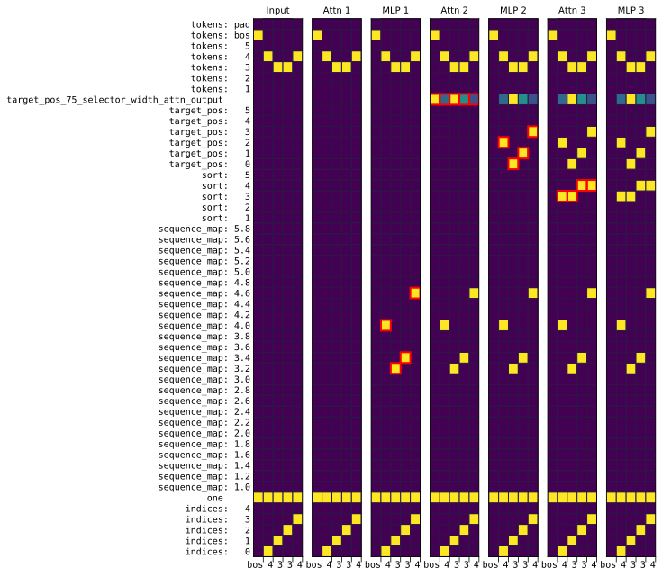
Figure 9: Compiled sort program. Attn 1 is a no-op, MLP 1 adds a small multiple of indices to the keys, and the rest of the model essentially implements sort_unique.
图 9：编译得到的排序程序。Attn 1 不执行任何操作，MLP 1 将 indices 的一个小倍数加到键上，模型的其余部分基本上实现了 sort_unique。
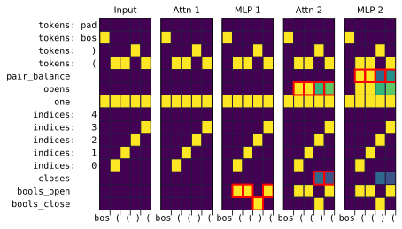
Figure 10: RASP program that uses frac_prevs as a subroutine to compute the fraction of open and closed parenthesis tokens and computes the difference. The compiled model uses open_token = “(” and close_token = “)”. Note that the compiled model has the same number of layers as the single frac_prevs model in Figure 2. Attn 1 is still a no-op, MLP 1 and Attn 2 compute both calls to frac_prevs in parallel, and MLP 2 computes the final result.
图 10：一个 RASP 程序，使用 frac_prevs 作为子程序来计算左括号词元和右括号词元所占的比例，并计算二者之差。编译得到的模型使用 open_token = “(” 和 close_token = “)”。注意，编译得到的模型与图 2 中单个 frac_prevs 模型的层数相同。Attn 1 仍不执行任何操作，MLP 1 和 Attn 2 并行计算对 frac_prevs 的两次调用，MLP 2 则计算最终结果。
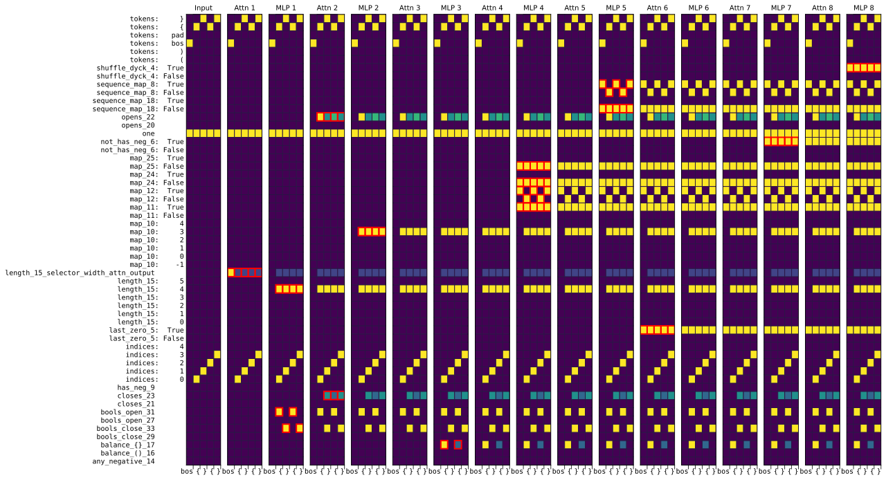
Figure 11: Compiled dyck-2 program for pairs = (“()”, “{}”).
图 11：pairs = (“()”, “{}”) 时编译得到的 dyck-2 程序。